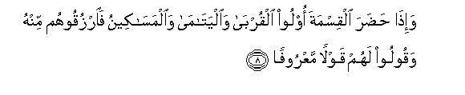
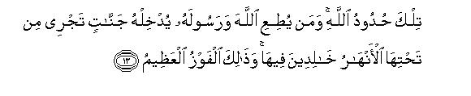
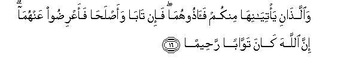
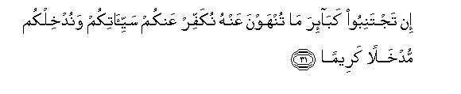
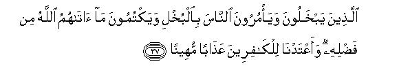
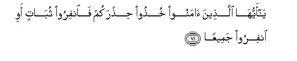
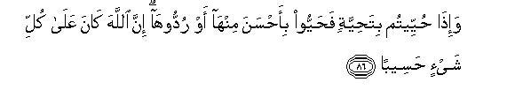
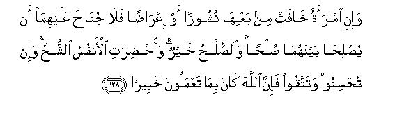

بسم الله الرحمن الرحيم
Sayyid Abul Ala Maududi - Tafhim al-Qur'an - The Meaning of the Qur'an
 4.
Surah An Nisa (The Women)
4.
Surah An Nisa (The Women)
This Surah comprises several discourses which were revealed on different occasions during the period ranging probably between the end of A.H. 3 and the end of A.H. 4 or the beginning of A.H. 5. Although it is difficult to determine the exact dates of their revelations, yet it is possible to assign to them a fairly correct period with the help of the Commandments and the events mentioned therein and the Traditions concerning them. A few instances are given below by way of illustration:
We know that the instructions about the division of inheritance of the martyrs and for the safeguard of the rights of the orphans were sent down after the Battle of Uhd in which 70 Muslims were killed. Then naturally the question of the division of the inheritance of the martyrs and the safeguard of the rights of their orphans arose in many families at Al-Madinah. From this we conclude that vv. 1 -28 were revealed on that occasion.
We learn from the Traditions that the Commandment about salat during war time was given on the occasion of Zat-ur-Riqa'a, an expedition which took place in A. H. 4. From this we conclude that the discourse containing v. 102 was revealed on that occasion.
The last warning (v. 47) to the Jews was given before the Banu Nadir were exiled from Al-Madinah in Rabi'-ulAwwal, A. H. 4. From this it may safely be concluded that the discourse containing v. 47 must have been revealed some time before that date.
The permission about tayammum (the performance of ablutions with pure dust, in case no water be available) was given during the Bani-al-Mustaliq expedition, which took place in A. H. 5.. Therefore the probable period of the revelation of the discourse containing v. 43 was A. H. 5.
Let us now consider the social and historical considerations of the period in order to understand the Surah. All the discourses in this Surah deal with three main problems which confronted the Holy Prophet at the time. First of all, he was engaged in bringing about an all round development of the Islamic Community that had been formed at the time of his migration to Al-Madinah. For this purpose he was introducing new moral, cultural, social, economic and political ways in place of the old ones of the pre-Islamic period. The second thing that occupied his attention and efforts was the bitter struggle that was going on with the mushrik Arabs, the Jewish clans and the hypocrites who were opposing tooth and nail his mission of reform. Above all he had to propagate Islam in the face of the bitter opposition of these powers of evil with a view to capturing more and more minds and hearts.
Accordingly, detailed instructions have been given for the consolidation and strengthening of the Islamic Community in continuation of those given in Al-Baqarah. Principles for the smooth running of family life have been laid down and ways of settling family disputes have been taught. Rules have been prescribed for marriage and rights of wife and husband have been apportioned fairly and equitably. The status of women in the society has been determined and the declaration of the rights of orphans has been made laws and regulations have been laid down for the division of inheritance, and instructions have been given to reform economic affairs. The foundation of the penal code has been laid down drinking has been prohibited, and instructions have been given for cleanliness and purity. The Muslims have been taught the kind of relations good men should have with their Allah and fellow men. Instructions have been given for the maintenance of discipline in the Muslim Community.
The moral and religious condition of the people of the Book has been reviewed to teach lessons to the Muslims and to forewarn them to refrain from following in their footsteps. The conduct of the hypocrites has been criticized and the distinctive features of hypocrisy and true faith have been clearly marked off to enable the Muslims to distinguish between the two.
In order to cope with the aftermath of the Battle of Uhd, Inspiring discourses were sent down to urge the Muslims to face the enemy bravely, for the defeat in the Battle had so emboldened the mushrik Arab clans and the neighboring Jews and the hypocrites at home that they were threatening the Muslims on all sides. At this critical juncture, Allah filled the Muslims with courage and gave them such instructions as were needed during that period of war clouds. In order to counteract the fearful rumors that were being spread by the hypocrites and the Muslims of weak faith, they were asked to make a thorough inquiry into them and to inform the responsible people about them. Then they were experiencing some difficulties in offering their salat during the expeditions to some places where no water was available for performing their ablutions, etc. In such cases they were allowed to cleanse themselves with pure earth and to shorten the salat or to offer the "Salat of Fear", when they were faced with danger. Instructions were also given for the solution of the puzzling problem of those Muslims who were scattered among the unbelieving Arab clans and were often involved in war. They were asked to migrate to Al-Madinah, the abode of Islam.
This Surah also deals with the case of Bani Nadir who were showing a hostile and menacing attitude, in spite of the peace treaties they had made with the Muslims. They were openly siding with the enemies of Islam and hatching plots against the Holy Prophet and the Muslim Community even at Al-Madinah itself. They were taken to task for their inimical behavior and given a final warning to change their attitude, and were at last exiled from Al-Madinah on account of their misconduct.
The problem of the hypocrites, who had become very troublesome at that time, was involving the Believers in difficulties-- Therefore they were divided into different categories to enable the Muslims to deal with them appropriately.
Clear instructions were also given regarding the attitude they should adopt towards the non-belligerent clans. The most important thing needed at that time was to prepare the Muslims for the bitter struggle with the opponents of Islam. For this purpose greatest importance was attached to their character building, for it was obvious that the small Muslim Community could only come out successful, nay, survive, if the Muslims possessed high moral character. They were, therefore, enjoined to adopt the highest moral qualities and were severely criticized whenever any moral weakness was detected in them.
Though this Surah mainly deals with the moral and social reforms, yet due attention has been paid to propagation of Islam. On the one hand, the superiority of the Islamic morality and culture has been established over that of the Jews, Christians and mushriks; on the other hand, their wrong religious conceptions, their wrong morality and their evil acts have been criticized to prepare the ground for inviting them to the way of the Truth.
The main object of this Surah is to teach the Muslims the ways that unite a people and make them firm and strong. Introductions for the stability of family, which is the nucleus of community have been given. Then they have been urged to prepare themselves for defense. Side by side with these, they have been taught the importance of the propagation of Islam. Above all, the importance of the highest moral character in the scheme of consolidation of the Community has been impressed.
Just, fair and equitable laws and regulations for the smooth running of family life have been laid down for the husband and wife. Detailed instructions have been given for the division of inheritance and due regard has been paid to the rights of orphans. 1 - 35
In order to inculcate the right spirit for the observance of rules and regulations, the Muslims have been enjoined to show generosity to all around them and to be free from meanness, selfishness, stinginess of mind, because this is essential for the consolidation of the Communities and helpful for the propagation of Islam. 36 - 42
The ways of the purification of mind and body for the offering of Salat have been taught because it plays the most important part in every scheme of moral and social reform. 43
After moral preparation, instructions for defense have been given. First of all, the Muslims have been warned to be on their guard against the cunning machinations and vile practices of the local Jews who were hostile to the New Movement. This caution was necessary for removing some possible misunderstanding that might have arisen on account of the pre-Islamic alliance between the people of Al-Madinah and the Jews. 44 - 57
Then they have been enjoined to place their trusts and offices of trust in the custody of honest and qualified persons, and to do what is just and right, and to obey Allah and His Messenger and those among themselves entrusted with the conduct of their affairs and to turn to Allah and His Messenger for the settlement of their disputes. As such an attitude and behavior alone can ensure consolidation, they have been strongly warned that any deviation from this path will lead to their disintegration. 58 - 72
After this pre-requisite, they have been exhorted to make preparation for defense and to fight bravely for the cause of Islam, without showing any kind of cowardice or weakness. They have also been warned to be on their guard against hypocrites. A line of demarcation has been drawn to distinguish the intentional shirkers from the helpless devotees. 73 - 100
Here again instructions have been given for the offering of Salat during military campaigns and actual fighting. This is to impress the importance of Salat even at the time of fear and danger. 101 - 103
Before proceeding on to the next topic, the Muslims have been exhorted to persevere in their fight without showing any kind of weakness. 104
In order to make the Islamic Community firm and strong for defense, the Muslims have been enjoined to observe the highest standard of justice. The Muslims are required to deal out strict justice even in case of the enemy, with whom they might be involved in war. They should also settle disputes between husband and wife with justice. In order to ensure this, they should keep their beliefs and deeds absolutely free from every kind of impurity and should become the standard bearers of justice. 105 - 135
Resuming the theme of defense, the Muslims have been warned to be on their guard against their enemies. They have been admonished to take necessary precautions against the machinations of the hypocrites and the unbelievers and the people of the Book. As belief in Allah, and Revelation and Life-after-death is the only safeguard against every kind of enemy, they should sincerely believe in and follow His Messenger, Muhammad (Allah's peace be upon him). 136 - 175
Though this verse also deals with the family laws contained in verses 1 - 35, it has been added as a supplement at the end of this Surah because it was revealed long after An-Nisa was being recited as a complete Surah. 176

In the name of Allah, the Compassionate, the Merciful.
[1] O mankind, fear your Lord, Who created you of a single soul, and of the same created his mate, and from that pair spread countless men and women over the earth;1 fear that Allah in Whose name you demand your rights from one another, and abstain from violating relations between kinsfolk; note it well that Allah is watching you very closely.
[2] Restore to the orphans their property,2 and do not exchange your worthless things for their valuable things,3 and do not devour their property by mixing it up with your own, for it is a great sin.
[3] And if you be apprehensive that you will not be able to do justice to the orphans, you may marry two or three or four women whom you choose.4 But if you apprehend that you might not be able to do justice to them, then many only one wife,5 or marry those women who have fallen in your possession.6 This will be the better course to avoid injustice.
[4] And give their dowries willingly to women (as an obligation), but if they, of their own accord ,remit a portion of the dowry, you may enjoy it with pleasure.7
[5] Do not give to the feeble-minded people that property which Allah has made the means of your maintenance: you should however, provide them with food and clothing and give them good advice.8
[6] And go on observing and testing the orphans until they reach the marriageable age:9 then if you perceive that they have become capable, deliver to them their property10 Be on your guard against devouring their property unjustly and wastefully and hastily lest they should grow up to demand it. If the guardian of an orphan is rich, let him abstain from the orphan's property, and if poor, let him eat of it fairly.11 When you hand over to them their property, then have some people to witness it, and Allah suffices as Reckoner.
[7] There is a share for men in what has been left by parents and near relatives, and there is a share also for women in what has been left by parents and near relatives, whether it be little or much;12 for this share has been prescribed (by Allah).

[8] And if the people of the family, orphans and the poor be present at the division of the inheritance ,give them also something out of it and speak to them kind words.13

[9-10] Let the people apprehend and be afraid of this: how solicitous they would have been on the eve of their death about the helpless. children they would be leaving behind. They should, therefore, fear Allah and say the just and right thing. In fact, those who grab unjustly the property of the orphans, fill their bellies with fire, and most surely they shall be thrown into the burning fire of Hell.14
[11] As regards inheritance, Allah enjoins you concerning your children that: The share of the male shall be twice that of the female.15 In case the heirs be more than two females, their total share shall be two-thirds16 of the whole and if there be only one daughter, her share shall be half of the whole. If the deceased has children, each of his parents shall get one-sixth of the whole,17 but if he be childless and his parents alone are his heirs, the mother shall have one-third of the whole.18 If the deceased has brothers and sisters also, the mother shall be entitled to one-sixth of the whole.19 The division of all these shares shall take place only after fulfilling the terms of the will and after the payment of the debt20 (if any). As regards your parents and your children, you do not know who is more beneficial to you. Allah has apportioned these shares and most surely Allah is All-Knowing, All-Wise.21
[12] And you will get half of what your wives leave behind, if they be childless; but if they leave children, then your share will be one fourth of what they have left, after the fulfillment of their will and the payment of their debt (if any). As for them, they will be entitled to one-fourth of the inheritance left by you, if you are childless; but in case you leave behind children, their share will be one-eighth22 of the whole after the fulfillment of your will and payment of your debt (if any). And if the deceased whether man or woman (whose property is ' to be divided as inheritance) leaves no children and no parents behind but has one brother or one sister alive each of the two will be entitled to one-sixth of the whole but in case the brothers and the sisters are more than one then the total share of all of them will be one-third23 of the whole after the fulfillment of the will and the payment of the debt (if any) provided that it is not injurious24 (to the heirs). This is the Commandment of Allah and Allah is All-Knowing and Lenient.25

[13] These are the limits prescribed by Allah: whoever obeys Allah and His Messenger, He will admit him into the Gardens underneath which canals flow, wherein he will abide for ever; this is the great success.
[14] And whoever disobeys Allah and His Messenger and transgresses the limits prescribed by Him, Allah will cast him into the Fire wherein he shall abide for ever, and shall have a disgraceful chastisement.25a

[15-16] If any of your women be guilty of indecency, call for four witnesses from among yourselves to testify against them: If they give evidence and prove the guilt, then confine them to their houses until death comes to them or Allah opens some other way out for them .And punish the two of you who commit this crime; then if they both repent and reform themselves, leave them alone,for Allah is generous in accepting repentance, and merciful in forgiving sins.26

[17-18] However note it well that Allah's acceptance of repentance is for those people only, who commit an evil in ignorance, and then repent of it soon after this. Allah again turns kindly to such people, for Allah is All-Knowing, All-Wise. But there is no repentance for those people who persist in their evil deeds until the dying hour comes to anyone of them; then he says, "Now I repent." Nor is repentance for them who die as unbelievers; for such people, We have prepared a painful torment.27
[19-21] O Believers, it is not lawful for you to become the heirs of widows by force:28 nor is it lawful that you should treat your wives harshly in order to deprive them of a part of the dowry you have given them. However (you have the right to treat them harshly), if they are guilty of adultery.29 You should live with them in an honorable manner, even if you dislike them; it is possible that Allah may bring much good to you through that very thing you dislike.30 And if you make up your mind to marry another wife in place of the one you already have, do not take back anything out of what you have given her. even though it may have been a heap of wealth. Will you take it back by slander and gross injustice? And how is it proper for you to take it, when both of you have enjoyed conjugal happiness and she received from you a solemn pledge of union?31
[22] And do not marry at all those women whom your father had married though what has happened in the past is excepted.32 This is an indecent and abominable thing and an evil practice.33
[23-24] Forbidden to you are your mothers,34 daughters,35 sisters,36 paternal aunts, maternal aunts, brother's daughters, sister's daughters,37 your foster mothers who have given a suckle to you, your foster sisters,38 who have taken suckle with you, the mothers of your wives,39 the daughters of your wives whom you have brought up,40 the daughters of those wives with whom you have had conjugal relations, but not of those wives with whom you have had no conjugal relations, and it is not sinful for you to marry their daughters (after having divorced them); and also forbidden to you are the wives of your sons who are from your loins,41 and it is unlawful for you to keep two real sisters as wives at one and the same time,42 though what happened in the past is excepted, for Allah is indeed Forgiving, Merciful.43 And forbidden to you are the wedded wives of other people except those who have fallen in your hands (as prisoners of war44 ): this is the Law of Allah that has been prescribed for you. With the exception of the above, it has been made lawful for you to seek in marriage with your wealth any other women provided that you keep them in wedlock and not in licentiousness. Then you should pay them their dowries as an obligation for the enjoyment of conjugal relations with them. However, there is no harm if a compromise is made in the dower by mutual consent after an agreement about it; Allah is All-Knowing, All Wise.
[25] Whoever cannot afford to marry free Muslim women, should marry one of the Muslim slave-girls in your possession; Allah has full knowledge of your Faith. You all belong to one and the same community;45 therefore, you may marry them with the permission of their guardians and give them their fair dowries so that they may live a decent life in wedlock and not in licentiousness nor may have secret illicit relations. Then if they are guilty of indecency, after they have been fortified by wedlock, they shall be given half the punishment prescribed for free women.46 This concession47 has been made for those of you who might apprehend a moral lapse without marriage, but it is better for you to practice self-restraint, and Allah is Forgiving, Merciful.
[26-28] Allah desires to make clear to you and guide you to the ways that were followed by the righteous people before you, and to turn to you mercifully; for He is All-Knowing, All-Wise.48 Yes. Allah desires to turn to you mercifully, but those who follow their lusts, want that you should swerve far away from the right path.49 Allah wills to make your restrictions light, for Man has been created weak by nature.
[29-30] O Believers, do not devour one another's property by unlawful ways; (instead of this) do business with mutual consents50 And do not kill yourselves;51 believe it that Allah is Compassionate to you.52 We shall throw into the Fire the one who commits such acts of aggression and injustice; and this is very easy for Allah.

[31] If you abstain from the heinous sins from which you are being forbidden, We will remit your trivial offenses53 and admit you to a place of honor.
[32] And do not covet what Allah has given some of you more than others: the men shall have their due share according to what they have earned and the women shall have their share according to what they have earned. So pray to Allah for His bounty; most surely Allah has perfect knowledge of everything.54
[33] We have appointed rightful heirs to the inheritance which is left by parents and relatives. As for those with whom you have made a pledge, do give them their share: most surely Allah is watching over everything.55
[34-35] Men are the managers56 of the affairs of women because Allah has made the one superior to the others57 and because men spend of their wealth on women. Virtuous women are, therefore, obedient; they guard their rights carefully in their absences58 under the care and watch of Allah. As for those women whose defiance you have cause to fear, admonish them and keep them apart from your beds and beat them.59 Then, if they submit to you, do not look for excuses to punish them: note it well that there is Allah above you, Who is Supreme and Great. And if you fear a breach between spouses, appoint one arbiter from the relatives of the husband and one from the relatives of the wife. If the two60 sides sincerely desire to set things right, Allah will create a way' of reconciliation between them, for surely Allah knows everything and is aware of everything.61


[36-38] And all of you should serve God and associate none with Him; and show kindness and affection to your parents, and be kind to near relatives, and to orphans, and to the needy; and be considerate to your neighbors kinsmen and strangers and to the companions at your side62 and to the wayfarer and to the slaves in your possession. Believe it that Allah does not like such persons as are self~conceited and are niggardly and bid others to be niggardly, and conceal the bounty of Allah that He has bestowed upon them;63 We have prepared a disgraceful chastisement for such ungrateful wretches. And Allah does not like those who expend their wealth to be seen of people, for they do not believe sincerely in Allah and the Last Day. The fact is that whoever has Satan for a comrade, has a very evil company.
[39-42] Well, what harm would have come upon them, if they had believed in Allah and the Last Day and spent out of what Allah had given them? Had they done so, Allah would surely have had knowledge of their good deeds. Indeed Allah does not wrong anyone even by a jot: if one does a good deed, He doubles it, and then from Himself bestows a rich reward. Just imagine how they will fare, when We shall bring forward a witness from every community and raise you (O Muhammad) as a witness in regard to these people.64 At that time, all those, who rejected the Messenger and disobeyed him, would wish the earth to split open and swallow them; for there they will not be able to hide anything from Allah.
[43] O Believers, do not offer the Prayer while you are intoxicated,65 for Prayer should be offered only when you know what you are saying.66 Likewise, do not offer the Prayer if you are "unclean"67 until you take your bath, except when passing on the way:68 and if you are sick or on a journey .or if any one of you has relieved himself or you have touched69 women and can find no water, then cleanse yourselves with pure dust by rubbing it on your face and hands;70 no doubt Allah is Lenient and Forgiving.
[44-46] Have you ever considered the case of those who have been given a portion of the scriptures?71 They themselves purchase deviation and wish you, too, to go astray from the Right Way: Allah knows your enemies well and Allah suffices you for protection and for help. Some of those, who have become Jews,72 pervert73 words out of their context and twist their tongues in order to malign the true Faith and say "sami 'ina74 wa 'asaina " and "Isma' ghaira musma `in75 and ''Ra 'ina76 . But, if they had said instead, "sami `ina wa ata "ana, " "Isma "' and " Unzurna," it would have been better for themselves and a more upright way. As Allah has cursed them for their disbelief, they are little disposed to believe.
[47-48] O you to whom the Book had been given! Believe in the Book We have sent down now, confirming the Book you already have with you,77 believe in it before We distort faces and set them backwards, or lay Our curse on them as We laid Our curse on the Sabbath breakers:78 and remember that Allah's Command is surely carried into effect. Shirk is the only sin that Allah does not forgive,79 and He forgives whomsoever He pleases, other sins than this,80 for whosoever associates any other partner with Allah, does indeed forge a big lie and commit the most heinous sin.
[49-50] Have you also marked those, who speak very highly of their own purity? However, Allah alone purifies whomever He pleases (and if they are not being purified), no injustice is being done to them in the least. Just behold! they do not hesitate to invent lies about Allah, and this sin alone suffices to show that they are manifest sinners.
[51-57] Have you not observed those who have been given a portion of the Book? They believe in jibt81 and taghut82 and say of the disbelievers, "Even they are more rightly guided an the way83 than the Believers." Such are the people whom Allah has cursed and you will find no helper to the one whom Allah curses. Have they any share in the Kingdom? If they had any, they would never have given even a farthing to anyone.84 Or, are they jealous of others, because Allah has blessed them with His bounty?85 If so, let them know that We did bestow the Book and the Wisdom upon the descendants of Abraham and blessed them with the great kingdom.86 But some of them believed in it and others turned away from it,87 and the burning fire of Hell suffices for those who have turned away from it. Surely We will throw into the Fire those who have rejected Our Revelations; as often as their skins shall be consumed, We will replace them by other skins so that they may taste the torment in full, for Allah is All-Powerful and All-Wise to enforce His decrees. As for those, who have believed in Our Revelations and have done righteous deeds, We will admit them to Gardens underneath which canals flow, wherein they will abide for ever, wherein they will have pure spouses, and We will admit them into thick shades.
[58] (O Muslims), Allah enjoins you to give the trusts into the care of those persons who are worthy of trust and to judge with justice,88 when you judge between the people. Excellent is the counsel that Allah gives you, for Allah hears everything and sees everything.
[59] O Believers, obey Allah and obey the Messenger and those entrusted with authority from among you. Then if there arises any dispute about anything, refer it to Allah and the Messenger,89 if you truly believe in Allah and the Last Day. This is the only right way and will be best in regard to the end.90
[60-65] Prophet, have you not marked those who profess to believe in the Book that have been sent down to you and in the Books that had been sent down before you, and yet want to turn to taghut for the judgment of their cases though they have been bidden to reject taghut?91 Satan intends to lead them far astray from the right path. And when it is said to them, "Come to that thing which Allah has sent down and to the Messenger," you see that the hypocrites show hesitation in coming to you.92 But how do they behave when a disaster befalls them as a consequence of their own doings? They come to you with oath,93 saying, "We swear by God that we only meant to promote the good and bring about a reconciliation between the parties." Allah knows what really is in their hearts: therefore show forbearance towards them and admonish them and give them a piece of advice that may go deep into their hearts. (Tell them) "Every Messenger whom We have sent must be obeyed because Allah has enjoined this."94 When they had wronged themselves, the best thing for them would have been to come to you and implore Allah's pardon, and if the Messenger had also asked Allah's forgiveness for them, most surely they would have found Allah Forgiving and Merciful. Nay, O Muhammad, by your Lord, they can never become Believers until they accept you as judge for the decision of the disputes between them, and then surrender to your decision with entire submission without feeling the least resentment in their hearts.95

[66-70] (As for them), only a few of them would have acted upon it, if We had enjoined them, "Kill yourselves," or "Leave your homes".96 It would have been better for them and it would have made them firm.97 (in their Faith), if they had done what they were commanded to do, for We would have given them a great reward from Ourselves and shown them the straight path.98 And who-so-ever obeys Allah and the Messenger, shall be with those whom Allah has blessed-the Prophets, the truthful and the martyrs and the righteous:99 what excellent companions these are that one may get!100 This is the real bounty which comes from Allah and Allah's knowledge suffices to know the Reality.

[71-72] Believers, be always prepared for encounter,101 and advance in detachments or march in a body, as the occasion may require. Well, there are among you such as shirk fight;'102 if a disaster befalls you, they say, "Allah has been very gracious to us that we did not accompany these people."
[73-76] And if you are blessed with grace from Allah, they say, as though there never had been any friendly relations between you and them "We wish we had also accompanied them and thus would have gained our end." (Let such people understand that) those alone, who barter away this worldly life for that of the Hereafter,103 should fight in the way of Allah; then We will bestow a great reward upon him who fights in the way of Allah whether he be slain or be victorious. Why should you, then, not fight in the way of Allah for the sake of those helpless men, women and children who, being weak, have been oppressed, and are crying out, "Our Lord, deliver us from this habitation whose inhabitants are unjust oppressors, and raise a protector for us by Thy grace and a helper from Thyself."104 Those, who follow the way of Faith, fight in the way of Allah, and those who follow the way of disbelief fight in the way of taghut.105 So fight against the helpers of Satan with this conviction that Satan's crafty schemes are in fact very weak.106
[77-78] Have you also marked those to whom it was said, "Withhold your hands (a while from war) and establish the Salat and pay the Zakat.? Now that they have been commanded to fight, some of them fear the people as they should fear Allah, or even more than that;107 they say, `Our Lord, why have You prescribed fighting for us? Why have You not given us further respite?" Say to them, "The pleasures of this worldly life are trifling and the life of the Hereafter is much better for a man who fears Allah, and you shall not be wronged in the least.108 As to death, it will overtake you wherever you may be, even though you be in fortified towers" If they have good fortune, they say, "This is from Allah," and if they suffer a loss, they say, "This is because of you."109 Say, "Everything is from Allah." What then has gone wrong with these people that they do not understand anything? Whatever good comes to you, O man, it is by Allah's grace, and whatever evil befalls you, it is the result of your own doings.
[79-80] We have sent you, O Muhammad, as a Messenger to mankind, and Allah's witness suffices for this. Whoever obeys the Messenger, in fact, obeys Allah and whoever turns away from him (is accountable for his deeds); anyhow We have not sent you to be keeper over them.110
[81-82] In your presence, they say, "We are obedient to you," but when they leave you, some of them meet together secretly at night to plot against what you say; Allah writes down all their secret talks; so leave them alone and trust in Allah; Allah alone suffices for trust. Do they not ponder over the Qur'an? Had it been from any other than Allah, surely there would have been many contradictions in it.111
[83] Whenever these people hear any news concerning peace or danger, they make it known to all and sundry; instead of this, if they should convey it to the Messenger and to the responsible people of the Community, it would come to the knowledge of such people who among them are capable of sifting it and drawing right conclusions from it.112 (Your weaknesses were such that) had it not been for Allah's grace and mercy towards you, all of you except a few, would have followed Satan.

[84-85] O Prophet, fight in the way of Allah: you are accountable for none but your own person; you should, however, urge on the Believers to fight: it may be that Allah will soon break the strength of the disbelievers, for Allah is the strongest in might and His punishment is most severe. Whoever pleads a good cause, will get a share from it, and whoever pleads an evil cause also shall get a share from it;113 for Allah keeps strict watch over everything.

[86-87] And when anyone greets you in a respectful manner, greet him with a better salutation than his or at least return the same;114 indeed Allah takes count of everything. Allah: there is no deity but He. He will gather you all together on the Day of Resurrection, the coming of which is beyond all doubt: and whose word can be truer than Allah's.115
[88-91] How is it with you that there are two opinions among you concerning the hypocrites,116 whereas Allah has turned them back (to their former state) because of the evils they have earned?117 Do you desire to show guidance to him whom Allah has let go astray? You cannot find a path for him whom Allah has turned away from the right path. They really wish that you should also become disbelievers, as they themselves are so that both may become alike. So you should not take friends from among them unless they migrate in the way of Allah; and if they do not migrate, then seize them wherever you find them and slay118 them and do not take any of them as friends and helpers. However, those hypocrites are excepted who join a people who are allied to you by a treaty.119 Likewise, those hypocrites are excepted who come to you and are averse to fighting either against you of against their own people. Had Allah willed, He would have given them power over you and they also would have fought against you; therefore if they leave you alone and desist from fighting against you and make overtures for peace to you, in that case Allah has left you no cause for aggression against them. You will also find another kind of hypocrites, who wish to be at peace with you and also at peace with their own people but who would plunge into mischief, whenever they got an opportunity for it. If such people do not desist from your enmity nor make overtures for peace nor desist from fighting against you, then seize them and slay them wherever you find them, for We have given you a clear authority to fight against them.
[92-93] It does not behoove a Believer to slay another Believer except by error,120 and if one slays a Believer by error, he must set free one believing slave as expiation121 and pay blood-money to the heirs122 of the slain person unless they charitably forego it. But if the murdered Muslim belonged to a people who are at enmity with you, then the expiation shall be the freeing of one believing slave; and if the slain person belonged to a non-Muslim ally of yours, then the blood-money must be paid to his heirs123 and a believing slave has to be set free. But if one could not afford a slave, then he must fast two consecutive months.124 This is the way enjoined by Allah for repentance;125 Allah is All-Knowing, All-Wise. As regards the one who kills a Believer willfully, his recompense is Hell, wherein he shall live for ever. He has incurred Allah's wrath and His curse is on him, and Allah has prepared a woeful torment for him.

[94] O Believers, when you go to Jihad in the way of Allah, discern between friend and foe; and if one greets you with a salutation of peace, do not say to him abruptly, "You are not a believer."126 If you seek worldly gain by this, Allah has abundant spoils for you. (Remember that) you yourselves were before this in the same condition; then Allah showed His grace on you;127 therefore you should discern well, for Allah is fully aware of what you do.
[95-96] Those people from among the Muslims who stay at home without any genuine excuse are not equal in rank with those who exert their utmost with their lives and wealth for the cause of Allah. For Allah has assigned a higher rank to those who exert their utmost with their lives and wealth than those who stay at home. Though Allah has promised a good reward for all, he has a far richer reward for those who fight for Him than for those who stay at home:128 they have high ranks, forgiveness and mercy from Allah, for Allah is Forgiving and Merciful.

[97-100] When the angels seized the souls of those who were ding wrong to their own souls129 they asked them, "What was the matter with you?" They answered, "We were oppressed in the land." The angels replied, "Was not Allah's earth spacious for you to emigrate in it?"130 Hell is the abode of such people and it is a very evil abode indeed. As regards those men, women and children who are really helpless and lack the means of migration and find no way out, Allah may pardon them, for Allah is Forgiving and Forbearing. The one who emigrates in the way of Allah, will find in the land enough room for refuge and abundant resources for livelihood.. As regards the one, who leaves his home to migrate towards Allah and His Messenger and death overtakes him on the way, Allah has taken upon Himself to give him his due reward, for Allah is Forgiving and Merciful.131
[101] When you go on a journey, there is no harm, if you shorten your Salat,132 (especially) when you fear that the disbelievers might harass you,133 for the disbelievers are openly bent upon enmity against you.
[102] And when you, O Prophet, are among the Muslims and are going to lead them in Salat134 (in a state of war), let a party of them stand behind you,135 carrying their weapons with them. When they have made their prostrations, they should fall back and let another party of them, who have not yet offered the Salat, say it with you and they, too, should be on their guard and keep their weapons with them.136 For the disbelievers are always on the look-out for a chance to find you neglectful of your weapons and your baggage so that they may swoop down upon you with a surprise attack. If, however, you feel some inconvenience on account of rain, or if you are ill, there is no harm if you put aside your weapons, but you should still be on your guard. Rest assured that Allah has prepared a disgraceful torment for the disbelievers.137
[103] When you have finished your Prayer, you should remember Allah, whether you are standing or sitting or reclining: then, as soon as you are secure, say your Salat in full. Indeed, the Salat is a prescribed duty that should be performed at appointed times by the Believers.
[104] Show no weakness in pursuing these people:138 if you are suffering hardship, they, too, are suffering hardship as you are suffering. Moreover, you are expecting to receive from Allah that which they are not expecting.139 Allah knows everything and is All Wise.
[105-112] O prophet,"140 We have sent this Book to you with the Truth so that you may judge between people in accordance with, the right way which Allah has shown you. So do not plead for the dishonest people: implore Allah's forgiveness: for Allah is Forgiving and Compassionate. You should not plead for those who are dishonest to themselves:141 Allah does not like the one who is persistently dishonest and sinful. They might hide their evil deeds from the people but they cannot hide these from Allah: He is with them even when they hold at night such secret consultations as do not please Him; Allah encompasses all that they are doing. Well, you have argued on their behalf in this worldly life but who will argue their case with Allah on the Day of Resurrection? Or who will be their defender there? If one does a sinful thing or wrongs himself in any way and afterwards implores Allah's forgiveness, he will find Allah Forgiving and Compassionate. But if one earns some evil (and does not repent), this earning of his will bring due punishment on him, for Allah is All Knowing, All-Wise. But he who commits an error or a sin, and then lays the blame for it on an innocent person, surely burdens himself with the guilt of calumny and a heinous sin.
[113] O Prophet, had not Allah's grace been with you, and had not His .mercy safeguarded you from their mischief, a party from among them had decided to involve you in misunderstanding though they were involving no one but themselves in misunderstanding and could have done you no harm.142 Allah has sent down the Book and the Wisdom to you and taught what you did not know; great indeed is His bounty to you.
[114-115] There is nothing good in most of the secret counsels of the people: it is, however, a good thing if one secretly enjoins charity or righteousness or says something in order to set aright the affairs of the people; We will give a great reward to him who does so to please Allah. But as regards him who is bent on opposing the Messenger and is following a way other than that of the Believers after Guidance has become clear to him, We will turn such a one on the way to which he himself has turned,143 and cast him into Hell which is the most wretched abode.

[116-122] Shirk144 is the only sin that Allah does. not forgive. He may forgive whomever He will, other than this sin, for whoever associates partners with Allah does, in fact, go far astray into deviation. The mushriks invoke to goddesses instead of Allah: they invoke that rebellious Satan,145 on whom Allah has laid His curse; (they obey that Satan) who said to Allah, "I will most surely take due share from your servants146 and will mislead them; I will entice them by vain desires; I will command them and they will slit147 the ears of the cattle by my order, and I will command them and they will make alterations and corrupt Allah's creation."148 Therefore whoever makes this same Satan his patron, instead of God, becomes a manifest loser. Though he makes (false) promises with people and entices them by vain hopes149 all his promises are nothing but deception. The abode of such people is Hell from where they will find no way of escape. As regards those, who believe and do good deeds, We will admit them into Gardens underneath which canals flow, wherein they will abide for ever. This promise of Allah is true and who can be truer in his word than Allah?
[123-124] The final result shall not be in accordance with your wishes nor in accordance with the wishes of the people of the Book. He who does evil shall be recompensed for it and he shall find no protector and no helper for himself against Allah. And the one who does good deeds, whether man or woman, provided that the one is a believer, will enter Paradise and they will not be wronged in the least of their rightful reward.
[125-126] Who can have a better way of life than the one who surrenders himself to Allah and does what is good and follows whole heartedly the way of Abraham whom Allah chose to be His friend? All that there is in the heavens and the earth belongs to Allah,150 and Allah encircles everything.151
[127] They ask your verdict concerning women.152 Say. `'Allah gives His verdict concerning them, and along with it reminds you of those Commandments which have already been told you in this Book,153 that is, the Commandments concerning those orphan girls whom you do not give their lawful rights154 and whom you do not wish to marry (or. whom you yourselves desire to marry for greed).155 He also reminds you of the Commandments concerning those children who are weak and helpless.156 Allah enjoins you to deal justly with orphans: Allah has full knowledge of whatever good you do.

[128-129] When157 a woman fears ill-treatment or aversion from her husband, there is no harm if the two make peace between themselves(by means of a compromise); after all peace is the best thing.158 Human souls are prone to narrow-mindedness,159 but if you show generosity and fear Allah in your dealings, you may rest assured that Allah will be fully aware of all that you do160 it is not within your power to be perfectly equitable in your treatment with all your wives, even if you wish to be so; therefore, (in order to satisfy the dictates of Divine Law) do not lean wholly towards one wife so as to leave the other in a state of suspense.161 If you behave righteously and fear Allah, you will find Allah Forgiving and Compassionate.162
[130-131] But if the spouses do separate, Allah will make each one of them independent of the other by His vast powers, for His resources are limitless and He is All-Wise and All-Knowing. And everything in the heavens and the earth belongs to Him. We enjoined those whom We gave the Book before you and now enjoin you also, to fear Allah in all your dealings. But if you reject this, (you will do so at your own peril, for) Allah is the owner of everything in the heavens and the earth: He does not stand in need of anyone and is worthy of all praise.
[132-134] Yes, Allah is the Owner of all that is in the heavens and the earth, and He suffices for help and protection. If He will, He may put you away, O people, and replace you by others and He is All Powerful to do this. Whoso desires the reward of this world should know that Allah possesses the rewards of both this world and the Hereafter: He hears everything and sees everything.163
[135] O Believers, be you the standard-bearers of justice and witnesses for the sake of Allah,164 even165 though your justice and your evidence might be harmful to yourselves, or to your parents, or to your relatives. It does not matter whether the party concerned is rich or poor: Allah is their greater well-wisher than you; therefore, do not follow your own desire lest you should deviate from doing justice. If you distort your evidence or refrain from the truth, know it well that Allah is fully aware of what you do.
[136-141] O you, who profess to have believed, believe sincerely in Allah166 and His Messenger and the Book which He has sent down to His Messenger and in every Book that He sent down before this: for whoever disbelieves in Allah and His Angels and His Books and His Messengers and the Last Day,167 most surely strays far away into deviation. As for those, who profess belief, then disbelieve, again profess belief and then disbelieve and then grow stubborn in their disbelief, 168 Allah will never forgive them and never show them the right way. And give the good tidings of a painful torment to the hypocrites who make the disbelievers their friends instead of the Believers. Do they go to the disbelievers to seek honor?169 Whereas, in fact, all honor belongs to Allah alone. Allah has already sent down to you in this Book the Commandment: you should not sit in a company wherein you hear things of unbelief concerning the Revelations of Allah, and wherein these are being ridiculed, until those people are engaged in some other talk. Now if you remain here you shall be guilty like them.170 Rest assured that Allah is going to gather the hypocrites and the disbelievers all together in Hell. The hypocrites are watching you closely to see how the wind blows. If victory comes to you from Allah, they will say to you, "Were we not with you?" And if the disbelievers gain the upper hand, they will say to them, "Were we not strong enough to fight against you? Yet we defended you from the Muslims.171 Indeed, on the Day of Resurrection, Allah will judge between you and them, and (in this judgment) Allah has left no way for the disbelievers to overcome the Believers.

[142-143] The hypocrites seek to deceive Allah, whereas, in fact, Allah has involved them in deception. When they rise up for the Salat, they go reluctantly to it, merely to be seen by people and they remember Allah but little.172 They are wavering between belief and disbelief: they are neither wholly on this side nor wholly on that side. You cannot guide to the Way the one whom Allah lets go astray.173
[144-145] O Believers, do not take the disbelievers as your friends instead of the Believers: do you ant to furnish Allah with a clear proof against yourselves? Note it well that the hypocrites shall go to the lowest abyss of Hell, and you will not find any helper for them.
[146-147] As regards those of them, who repent and mend them ways and then hold fast to Allah and dedicate their religion sincerely to Allah,174 such people are with the Believers, and Allah will most surely bestow a great reward on the Believers. And why should Allah punish you, if you are grateful175 and behave like true Believers? For Allah fully appreciates worth176 and knows everything about everyone.
[148-149] Allah does not like that a person should utter evil words except when one has been wronged: Allah is All-Hearing, All-Knowing. (Though you are allowed to give expression to evil words, if you have been wronged,) yet if you go on doing good openly and secretly or at least refrain from evil, you should know that Allah is Forgiving, whereas He is All-Powerful to punish.177

[150-152] Those, who deny Allah and His Messengers and desire to draw a line between Allah and His Messengers, and say, "We will acknowledge some and deny others," they seek a midway between belief and disbelief. All those are confirmed disbelievers,178 and We have prepared an ignominious punishment for such disbelievers. In contrast to them, We will most surely give their due reward179 to those who believe in Allah and all His Messengers and do not discriminate against any of them; for Allah is very Forgiving and very Compassionate.180
[153-155] If the people of the Book are today asking you to cause a Book to come down upon them from heaven,181 they have already made even more monstrous demands from Moses. They said to him, "Make us see Allah with our own eyes." As a result of their wickedness, a thunder-bolt smote them all of a sudden.182 Then they took the calf as the object of their worship, after they had seen clear signs:183 but even after this, We forgave them. We bestowed upon Moses a clear Commandment and raised Mount Tur over them and took a Covenant from them (to obey it).184 We enjoined them to enter the gate bowing down humbly.185 We said to them, "Do not break the Sabbath," and took a solemn Covenant186 from them to observe this law strictly. But they broke the Covenant, rejected the clear signs of Allah and slew some Prophets of Allah unjustly and declared, "Our hearts are quite secure under cover"187 Nay,188 Allah has sealed their hearts because of their worship of falsehood and this is why they believe but little.
[156-162] Then189 they went so far in their unbelief that they uttered a monstrous calumny against Mary:190 they themselves bragged, "We have slain Jesus, son of Mary, a Messenger of Allah."191 Whereas192 in fact, they did not slay him nor did they crucify him but the matter was made dubious for them.193 And those who have differed about this matter are also in doubt concerning it. They have no knowledge of it but they follow mere conjectures,194 for it is certain that they did not kill Jesus. Nay, the fact is that Allah had raised him to Himself,195 for Allah is All-Powerful, All-Wise. There shall be none among the people of the Book but will believe in him before his death,196 and he will be a witness against them on the Day of Resurrection.197 In short,198 it is because of these unjust things of those who became Jews and because they often stand in the way of Allah,199 and because they take interest, which had been prohibited,200 and because they devour unlawfully the property of others it is because of all these transgressions that We made unlawful many clean and pure things which were formerly lawful for them.201 We have prepared a painful torment for those among them who disbelieve,202 but most surely We will reward richly all those among them who have profound learning and who are honest and who believe in what has been sent down to you, and what was sent down before you,203 and who establish the Salat, pay the Zakat dues and believe sincerely in Allah and the Last Day.

[163-166] O Muhammad, We have sent Revelation to you just as We sent it to Noah and other Prophets after him.204 We also sent Revelation to Abraham and Ishmael and Isaac and Jacob, and the descendants of Jacob, and Jesus and Job and Jonah and Aaron and Solomon, and We gave the Psalms to David.205 We also sent Revelation to those Messengers whom We have already mentioned to you and to those Messengers whom We have not mentioned to you; and We spoke directly to Moses as in conversation.206 All these Messengers were sent as bearers of good news and warners,207 so that, after their coming, people should have no excuse left to plead before Allah208 Allah is, in any case All-Powerful, All-Wise. (People may or may not believe it) but Allah bears witness that what He has sent down to you, He has sent that down with His knowledge and the angels also bear witness to it, though Allah's being a witness alone suffices.

[167-169] Those, who disbelieve in it and hinder others from the way of Allah, have strayed far away in to deviation from the Truth. Allah will never forgive those who have thus adopted the way of disbelief and rebellion and committed gross injustice and iniquity, and He will not show them any other way than that of Hell, wherein they shall abide for ever: this is not difficult for Allah.
[170] O people, this Messenger has come to you with the Truth from your Lord, so believe in him, for it will be better for yourselves; but if you disbelieve, you should know that all that is in the heavens and the earth belongs to Allah,209 and Allah is All-Knowing, All-Wise.210
[171] O people of the Book, do not transgress the bounds in your religion,211 and attribute nothing but the Truth to Allah. The Messiah, Jesus son of Mary, was no more than a Messenger of Allah and His Command"212 that was sent to Mary and a spirit213 from Allah (that took the shape of a child in the womb of Mary). So believe in Allah and His Messengers,214 and do not say, "There are `Three'."215 Forbear from this: this will be better for you. Allah is only One Deity; He is far above this that He should have a son:216 all the things in the heavens and in the earth belong to Him,217 and He alone suffices for their sustenance and protection.218
[172-173] The Messiah never disdained to be a servant of Allah nor do the angels who are nearest to Him disdain it. Whoever disdains the service of Allah and prides himself on it, (should know that) He will muster all of them before Him. Then He will give full reward to those who believed and did good deeds and out of His bounty bestow upon them even more than their dues; but He will inflict a painful chastisement on those who have disdained His service and prided themselves on it. And there they will find none of those on whom they rely to be their protectors and helpers beside Allah.
[174-175] O mankind, a clear proof of the Truth has come to you from your Lord, and We have sent down to you the Light that shows the Way clearly to you. Now those who will accept Allah's Message and seek His protection, Allah will cover them with His mercy and grace and will show them the Right Way to Himself.
[176] People219 seek your verdict on (the inheritance left by) a childless person.220 Say, "Allah gives His verdict: if a person dies childless and leaves behind a sister,221 she shall get half of his inheritance: and if the sister dies childless, her brother222 shall inherit her property: and if the deceased leaves behind two sisters, they shall inherit two thirds of the inheritance:223 and if the number of the brothers and sisters is more than two, the share of each brother shall be double that of each sister." Allah makes His Commandments plain to you lest you should go astray; Allah has perfect knowledge of everything.
1This introduction beautifully suits the subsequent laws and regulations about human rights, specially about the smooth running of the family life. On the one hand, the people have been urged to fear Allah so as to escape His displeasure; on the other, they have been reminded that all human beings have sprung from one and the same parents and are thus closely related to one another. "....He created you of a single soul".At first one human being was created and then from him the ttumatt race spread over the earth. Therefore they should strictly observe the ties and obligations of kin-ship. We learn from another part of the Qur'an that Adam was that "single soul." He was the first Man from whom the whole of mankind sprang up and spread over the earth. "....and of the same created his mate:" We have no definite detailed knowledge of how his mate was created of him. The commentators generally say that Eve was created from the rib of Adam and the Bible also contains the same story. The Talmud adds to it that she was created from the thirteenth rib of Adam. But the Qur'an is silent about it, and the Tradition of the Holy Prophet that is cited in support of this has a different meaning from what has been understood. The best thing, therefore, is to leave it undefined as it has been left in the Qur'an, and not to waste time in determining its details.
2That is, as long "As the orphans are under age, spend their property only in their interest; and when they come of age, return their rightful property to them."
3This is a comprehensive sentence, which may mean, "Do not make your Income unclean in any unlawful way." It may also mean, "Do not exchange your worthless things for the valuable things of the orphans."
4The commentators ascribe three meanings to this:
(a) Hadrat 'A ' ishah says that this was revealed to remedy an evil that was prevalent in the days of "Ignorance." The guardians of the orphan girls used to marry them for their wealth and beauty, with the intention of keeping them under their power because they had no one to defend their cause; then they treated them unjustly without any fear. Therefore when they became Muslims, they had misgivings about marrying orphan girls. Accordingly, the Qur'an advised them to marry women of their choice other than orphan girls in their charge, if they feared that they would not be able to do justice to them. Verse 127 of this Surah also supports this comment.
(b) In commenting on this, Hadrat Ibn-i-`Abbas and his disciple `Ikrimah assert that this Commandment was given to eradicate an injustice that was prevalent at that time. In pre-Islamic days, there was no limit to the number of wives and some people would marry even a dozen of them but when they could not meet the increasing expenses, they were forced to grab the property of their orphan nephews and other helpless relatives. Therefore, Allah restricted the maximum number of wives to four, and enjoined that this too, was subject to the condition that one should do justice to all of them.
(c) SaÆid bin Jubair, Qatadah and some other commentators declare that this Command was given to safeguard the interests of wives. They say that even before the advent of Islam, injustice to the orphans was looked upon with disfavor, but in regard to wives, it was different; they would marry as many as they liked and would treat them cruelly and unjustly without any fear of the society or pangs of conscience. Therefore Allah warned them that they should refrain from doing injustice to their wives as they did in the case of the orphans. Therefore they should not marry more than four wives and that too, only if they would do justice to them.
The words of the verse bear all the three meanings and probably all three are meant. Another meaning also can be: "If you cannot treat the orphans justly as they normally should be, you may marry the women who have orphan children."
5The consensus of opinion of all the scholars of the Muslim law is that this verse limits the number of wives and prohibits the keeping of more than four at one and the same time. Traditions also support this. It is related that at the time when Ghailan, the chief of Ta`if, became a Muslim, he had nine wives. The Holy Prophet asked him to keep only four of them and divorce all the others. There is another instance of Naufal bin Mu`aviyah, who was ordered by the Holy Prophet to divorce one of his five wives.
It should also be noted that this verse restricts polygamy with the provision of justice to all the wives; therefore whoever abuses this permission without fulfilling the condition of justice and marries more wives than one tries to deceive Allah. The courts of an Islamic State are, therefore, empowered to enforce justice in order to rectify the wrong done to a wife or wives. At the same time it is absolutely wrong to conclude from the proviso of justice, attached to this Commandment, that this verse was really meant to abolish polygamy. This is not the view of the Qur'an, but of those Muslims who have been overawed by the Christians of the West. They say that the Qur'an is also against polygamy but it did trot abolish it directly because it did not consider it expedient at the time for the custom had become very common. Instead of this, it allows polygamy provided that justice is done to all the wives. As this condition is most difficult to fulfill, the recommendation is towards monogamy. Obviously, this way of thinking is the result of mental slavery, because polygamy in itself is not an evil for in some cases it becomes a real cultural and moral necessity. There are Borne people, who, even if they wished, cannot remain content with one wife. Polygamy comes to their rescue and saves them and the society in general from the harms of unlicensed sexual indulgences. That is why the Qur'an allows polygamy to such people with the explicit condition of doing justice to all the wives.
As regards those who consider polygamy to be an evil, they are free to oppose the Qur'an and condemn polygamy, but they have no right to ascribe their own perverted views to the Qur'an, for it makes this lawful in very clear language without employing any words that might be stretched in any way to imply that the Qur'an means to abolish it. (For further explanation, please consult my book .Snnat ki A 'ini Hathiyyat, pp. 307-3161.
6"Those women": slave girls captured in war and distributed among the people by the government. It tray either mean: "If you cannot bear the expenses of a free woman, you may marry a slave girl as permitted in.v. 25," or it may mean: "If you need more wives than one but are afraid that you might not be able to do justice to your wives from among the free people, you may turn to slave girls because in that case you will be burdened with less responsibilities. (For details please refer to E.N. 44 below).
7Hadrat `Umar and Qadi Shuraih have ruled that if a wife remits the whole of her dowry or a part of it but later on demands it, the husband shall be compelled to pay it because the very fact that she demands it is a clear proof that she did not remit it of her own free will. (For further details, consult my book Huquq-uz-Zaujain, under the caption Dowry)
8This verse is very comprehensive in meaning. It teaches the Muslim ' Community the lesson that in no case should wealth, which is so important for the maintenance of life, be entrusted to such people as are feeble-minded and incapable of using or .managing it properly, for they might, by its wrong use, spoil its cultural and economic system and, in the long run, its moral system as well. ft is true that the rights of private ownership must be honored, but at the same time they are not to be so unlimited as to allow one to use them in any way one likes and create social chaos. As far as one's necessities of life are concerned, they must be fulfilled but none should be allowed to use these rights to the extent that is harmful to the collective moral, cultural and economic good of the Community. According to this verse, every owner of wealth should consider seriously before entrusting his wealth to anyone whether that person is capable of using it properly. On the larger scale, the Islamic State should take into its own custody the property of those who are found incapable of using it properly, or of those who may be using it in wrong ways but should arrange for the provision of their necessities of life.
9That is, "When they are about to attain their puberty, keep an eye upon them and go on testing their intelligence in order to see how far they have become capable of looking after their own affairs."
10Two conditions of puberty and capability have been laid down for the return of their property to the orphans. As to the application of the first condition, there is consensus among the scholars of law, but in regard to the second condition there is some difference of opinion. Imam Abu Hanifah is of the opinion that if the orphan lacks capability when he reaches the age of puberty, his guardian may wait for a maximum period of seven years, and then he must return this property to him whether he shows signs of capability or not. But Imam Abu Yusuf, Imam Muhammad and Imam Shaf'i are of the opinion that capability is a pre-requisite for .the return of his property to the orphan. Probably these latter scholars were inclined to the opinion that the case of such a person should be referred to a Muslim judge, who would himself arrange for the management of the property of the one who has not acquired capability of management.
11That is, "He should charge for his services only that much as may be considered fair by every unbiased person and that he should charge openly and keep an account of it."
12This verse contains five legal regulations about inheritance. First, that not only men but the women also have a share in the inheritance. Second, that it must be divided among all heirs, however little or insignificant it is; so much so that even if the deceased has left one yard of cloth and there are ten heirs, it must also be cut into ten parts. However, an heir may buy the shares of others by mutual consent. Third, that the verse also implies that this law applies to all sorts of property, transferable or non-transferable, agricultural or industrial, or of any other type. Fourth, that the right of inheritance becomes valid only when the deceased leaves some property behind him. Fifth, that when the nearest relatives are alive the distant relatives have no right in the inheritance.
13Here the heirs of the deceased have been enjoined to be generous towards distant and near relatives and the indigent members of the family and orphans who happen to be present on the occasion of the division of inheritance, though they might have no share in it. They should give them also something and speak gently to them and avoid using harsh and unkind words as the narrow minded people generally use on such occasions.
14According to a Tradition this verses were revealed in response to the request of the widow of Hadrat Sa'd bin Rubai'. She came to the Holy Prophet with her two daughters and said, "O Messenger of Allah, here are the daughters of Sa'd who has been martyred in the battle of Uhd. Their uncle has taken possession of the whole of his property and has not left a single penny for them. Now who is going to marry them after this?
15The first guiding principle about the division of inheritance is that the share of the male shall be double that of the female, and this is very sound and just. As the Muslim law lays the major burden of the economic responsibility of the family on the male and keeps the female almost free from it, justice demands that her share of inheritance should be less than that of the male.
16The same applies to the case of two daughters as well. It means that if the deceased leaves no son but only daughters, whether they are two or more, they shall be entitled to two-thirds of the whole inheritance and the remaining one-third shall be divided among the other heirs. As a corollary of this, if the deceased leaves only one son, there is a consensus of opinion that he shall be entitled to the whole of the inheritance in the absence of other heirs and if there are other heirs too, he shall receive the whole of the retraining inheritance after the allotment of their shares.
17Each of the parents of the deceased shall be entitled to one-sixth of the inheritance, if he leaves behind a child or children whether they are only daughters or only sons or both sons and daughters, or only one son or only one daughter. As regards the remaining two-thirds, it shall be divided among the other heirs.
18The remaining two-thirds shall be given to the father, if there be no other heir; otherwise the father shall share two-thirds with the other heirs.
19If the deceased has brothers and sisters, the share of the mother has been reduced froth one-third to one-sixth. This reduced one-sixth will be added to the father's share, for in that case the father's responsibilities are increased. It should be noted that the brothers and sisters of the deceased are not entitled to any share if the parents are alive.
20The mention of the fulfillment of the will precedes the payment of the debt, for every deceased person may not owe a debt, but he must make his will. As regards the enforcement of the law, the consensus of opinion of the whole Muslim Community is that the payment of debt must have priority over the fulfillment of the will. That is, the debt, if any, must be paid first and then the terms of the will should be enforced and after this the inheritance should be divided. In E.N. 182 of Al-Baqarah, it has been stated that one has the right to bequeath by will one-third of the whole property. This has been permitted to enable a person to leave for a deserving relative or relatives, who are not entitled to inheritance, a part of the property. For instance, if there is an orphan grandson or a grand-daughter, or the widow of a son or an indigent brother or sister, or a brother's widow, or a nephew, or some other relative, who needs help, he may leave a part of the inheritance for such a one by means of his will. One is even allowed to leave by will a share for any deserving person or for public service. In short, the law regulates the distribution of two-thirds (or a little more) of one's inheritance and gives option for the disposal of the remaining (about one-third) by the special circumstances of one's own family., (which obviously vary of each individual). At the same time provision has been made to wrong done by a will to the heirs in any way. The members of the rectify that wrong by mutual consent or take the case to the Muslim will to suit in the case redress any family may judge for redress. For further explanation, see my book: Yatim Potay Ki Warasat.
21This is the answer to all those foolish people who do not understand the wisdom of the Divine Law of inheritance, and in their folly propose amendments to it in order to make up for "the deficiency" in the Law.
22In case the deceased leaves behind children, his wife or wives will be entitled to only one-eighth of the inheritance, and if he dies childless, she or they will he entitled to one-fourth of the whole and this one-fourth or one-eighth will be divided equally among all of them.
23If there he any other heir, he shall get share out of the remaining 5/6 or 2/3, as the case may be; otherwise the deceased will have the right to make his will about the whole of the remaining 5/6 or 2/3.All the commentators are agreed that in this verse brothers and sisters refer to half-brothers and half-sisters from the side of the mother alone. The rule of inheritance about real brothers and real sisters and half-brothers and half-sisters from the side of the father is given at the end of the Surah.
24The will shall be considered as injurious if it affects adversely the rights of the lawful heirs and the debt will be injurious if the testator acknowledges a debt which he has not actually taken or plays some trick to deprive the rightful heirs of their due shares. Such a thing has been declared as one of the most heinous sins according to a Tradition. Another Tradition of the Holy Prophet says, "There may be a person, who, throughout his whole life, does deeds that deserve Paradise, but who on the eve of his death makes an injurious will and thus in the end he does an act that deserves Hell." Though such an injury is a heinous sin in any case, the warning has specially been given about it in connection with a person who has neither children nor parents to inherit his property. This is because such a one is more prone to squander his property in order to deprive comparatively distant relatives.
25The attribute of Allah that He is All-Knowing, has been mentioned here for two reasons. First, it is to warn the people that none can escape the consequences of a breach of His Law, for, He has knowledge of everything. Second, it is to convince people that the shares of inheritance appointed by Allah are absolutely right, for Allah knows better than they in what lies their good. The other attribute that He is Lenient has been mentioned to show that the Laws of .Allah are not harsh but are so lenient that they do not put the people to hardship.
25aThis stern warning has been given to save people from the eternal torture of Hell, which they will suffer if they change the law of inheritance or break other legal limits prescribed by Allah in His Book. It is a pity that in spite of this stern warning the Muslims changed and broke the Law of Allah with the same impudence as shown by the Jews. The transgressions against this law of inheritance are an open rebellion against Allah. They deprive women of their share of inheritance; they discard the Law of Allah and adopt the Law of primo-geniture or of joint family system instead: whenever it suits their whims and interests they make the share of the male and the female equal in order to rectify the Law of Allah. The latest rebellion against the Law is that some Muslim States have followed the West and imposed "Death Duties" which implies that the State is also an heir whom Allah had forgotten to mention. As a matter of fact, the state is entitled to an inheritance only if the deceased leaves behind an unclaimed property or himself allots a portion of it to the state by his will.
26In both these verses (15-16j, punishment for fornication was prescribed for the first time in Islam. According to verse 15, the guilty women were to be kept in confinement till further order, and according to verse I G both the male and the female guilty of fornication were to be punished, that is rebuked. disgraced, beaten, etc. Afterwards this punishment was altered by verse 2 of Surah An-Nur (XXIV). Now both the male and the female are to be scourged with one hundred stripes each.
This gradual enforcement of the criminal law was based on sound practical wisdom. At that tithe the Arabs were not accustomed to live under a settled government with a regular system of law and judiciary. Therefore it might have unwise and too much for them, if the Islamic State had imposed on them its complete system of criminal laws all at once. That is why at first the sort of punishment contained in these two verses was enforced acid then gradually stricter punishments were prescribed for fornication. theft, slander, etc., and finally that complete system of law was evolved which was in force during the time of the Holy Prophet and his rightly guided successors.
The seeming difference in these two verses has misled commentator Suddi to the conclusion that verse I S prescribed the punishment for married women and verse I G for unmarried men and women. Obviously, this flimsy commentary is not supported by any sound argument. Likewise, the commentary of Abu Muslim Isfahani that verse 15 is about the un-natural crime between two females and verse I G about the un-natural crime between two males is also wrong. The Qur'an is concerned only with the fundamental principles of law and morality: therefore it only discusses those problems which are confronted in normal life and does not concern itself with the ones that are met with under abnormal circumstances. These latter problems, as they arise, are left for the people to decide according to their insight. That is why, when after the death of the Holy Prophet the case of unnatural crime between two males was brought before the Companions, none of them turned to these verses for its decision.
27The word taubah means 'to turn back' and 'to turn to'. When a person feels sorry for his sin and turns back from it, he may be likened to a runaway slave who comes back to his master. This is his taubah. When the master accepts his repentance, he turns to him kindly and forgives him. In Arabic this is his taubah to his servant. In this verse Allah has stated these two aspects of taubah. He says, "I turn only to those servants of Mine, who, if they commit some un-intentional sin through ignorance, turn to Me for forgiveness as soon as they realize their folly. For such repentance, the door of My forgiveness is ever open. It is, however, not so for those who persist in sin throughout their lives without the least fear of Allah and offer repentance only when death confronts them". The Holy Prophet says that Allah accepts the repentance of a person only up to the time, when there appears no sign of death. It is obvious that after the time of test has expired, no chance is left for him to turn back from sin. Likewise, if a person is dying as a disbeliever and seeing with his own eyes the other world, contrary to his expectations, the question of his repentance does not arise at all.
28This means that the widow of the deceased should not be regarded as a part of his inheritance. After the death of the husband, his widow is quite free to live wherever she likes and to marry whomever she chooses after the expiry of her term.
29That is, "You may hurt them for immoral conduct but not for grabbing their wealth."
30If the wife is not beautiful or has some other defect that might not be to the husband's liking, it is not right that he should make up his mind to get rid of her at once without any further consideration. He should behave coolly and patiently. She may have some other redeeming qualities that may be more conducive to a happy married life than beautiful looks. It is just possible that the discovery of those qualities might change his repulsion at first sight into attraction. In the same way, sometimes it so happens that in the beginning of married life, the husband takes a dislike to something in the wife and feels a repulsion towards her but if he is patient with her and lets her show her better side fully, he himself realizes that her good qualities more than compensate for her shortcomings. "therefore it is not right for the husband to cut off his relations with his wife without a good deal of thinking. Divorce is the very last thing to which one may resort as a necessary social surgery and that, too, only when it becomes absolutely inevitable. The Holy Prophet says that of all the lawful things, divorce is the most reprehensible thing in the sight of Allah. In another Tradition, he admonishes, An-Nisa "Enter into marriage and divorce not, for Allah does not approve of such men and women as divorce and marry for mere sexual enjoyment."
31"Solemn pledge" is the marriage bond on the guarantee of which a woman gives herself up to a man. Therefore, if the man breaks that pledge of his own accord, he has no right to get back what he gave her as dower at the time of making that pledge. (Please see E.N.251, Al-Baqarah, also).
32While forbidding the wrong ways of `ignorance', the Holy Qur'an usually ends the instruction with such words as: "though what has happened in the past is excepted." It has two meanings in view. First, that no action will be taken in regard to those wrong things that one did in ignorance, provided that one mended ones ways and gave them up after the receipt of a particular Commandment. Second, that those words meant to give reassurance that the new instructions had no retrospective effect. For instance, if a person had married his step-mother before it was declared to be unlawful, according to these words, the offspring of all such previous marriages did not automatically become illegitimate by this newly declared prohibition so as to deprive them of their share of inheritance. Likewise if some from of trade had been made unlawful, it did not mean that all the previous transactions in that form had become null and void, and that one would have to return all the wealth earned in that way or that it had become completely unlawful.
33According to the Islamic Law, it is a criminal offense and is within the jurisdiction of the police. Some Traditions related in Abu-Da'ud, Nasa'i and Musnad Ahmad are to the effect that the Holy Prophet confiscated their properties and sentenced to death those who married their step-mothers. According to another "Tradition, related by Ibn Majah from Ibn `Abbas, the Holy Prophet enunciated this fundamental law: "Anyone who commits fornication with any of the forbidden relations should be put to death." The experts on Muslim Law, however, differ in regard to this matter. While Imam Ahmad is of the opinion that such a criminal ,should be put to death and his property confiscated, Imam Abu Hanifah, (maw Malik and lmam Shafi 'i are of the opinion that if a person commits fornication with anyone of the prohibited relations, he should be punished for the offense of fornication and if he marries such a one, he should be given an exemplary punishment for this heinous sin.
34This prohibition applies both to the real mother and to the step-mother and both are unlawful. It also applies to the mother of the father and to the mother of the mother.
Experts have differed as to whether the woman with whom the father has had illicit relations is also unlawful for the son or not. Some of the earlier jurists do not consider her unlawful, but some others not only consider her unlawful for the son but also the woman whom the father has touched lustfully with the hand. There has also been a difference of opinion as to whether the woman with whom the son has had an illicit relation is unlawful for the father and whether the man with whom the mother or the daughter has had illicit relation becomes unlawful for both the mother and the daughter. There have been lengthy controversies concerning the legal niceties of this matter, but a little thinking will show that the existence of a wife who is also coveted by the husband's father or his son, or whose mother or daughter is also coveted by the husband himself, cannot bode well for a righteous society. Divine Law in this matter does not tolerate the legal hair splitting on the basis of which fine distinctions are made between marriage and after marriage, touching with the hand and casting of looks, etc. The simple thing is that in family life existence of sexual relations of the father and the son with one and the same woman, or of the mother and the daughter with one and the same man, is bound to corrupt the family, and the Divine Law cannot tolerate it. This is supported by the following two Traditions of the Holy Prophet:
(1) "The mother and the daughter of the woman become unlawful for the man who cast a look at her sexual organs."
(2) "God does not like even to look at a man who casts a gaze at the sexual organs of the mother and of her daughter."
35The prohibition about daughter also applies to the daughter of the son and the daughter of the daughter. There is, however, a difference of opinion in regard to a girl born of an illicit relationship. Imam Abu Hanifah, Imam Malik and lmam Ahmad-bin-Hanbal (may Allah bless them all) are of the opinion that she too is unlawful like the lawful daughter, but Imam Shafi 'i does not consider an illegitimate daughter unlawful. But the very idea is repugnant that one should marry a girl about whom one has the knowledge that she is of one's own seed.
36This applies to the real sister as well as to the foster sisters from the father's and the mother's side.
37All these relations are prohibited, irrespective of whether they are real or step from the father's side or from the mother's side. The sister of the father or mother, whether real or step, is unlawful for the son. Similarly the daughters of the brothers and sisters whether they are real or step are unlawful for a person like his own real daughter.
38The consensus of opinion is that the woman who suckled a boy or a girl should be treated as the real mother and her husband as the real father with regard to this prohibition. All those relations that have been made unlawful in respect of the real mother and real father are also prohibited in respect of the foster mother who has suckled and in respect .of her husband. This is based on a Tradition of the Holy Prophet which is to this effect: "Suckling makes unlawful what blood makes unlawful. " There is, however, a difference of opinion as to the minimum quantity of milk that is suckled. According to Imam Abu Hanifah and Imam Malik, if the child suckles milk equal to that minimum quantity that breaks the fast, the woman shall be treated as its real mother for marriage relations. But Imam Ahmad is of the opinion that the prohibition shall take place if the child suckles the woman at least three times and according to Imam Shafi `i at least five times. There is also a difference of opinion as to the age of the child at the time of suckling that brings prohibition. Below are given the opinions of the jurists:
(1) Hadrat Umm Salamah, Ibn `Abbas, Zuhri, Hasan Basri, Qatadah, `Ikrimah, and Auza`i are of the opinion that if the child is suckled during the period when it has not yet been weaned and it lives only on suckling, the prohibition shall be effective; but if it is suckled after it has been weaned, it will not apply; for this is like drinking water. There is also a saying of Hadrat `Ali to the same effect.
(2) Hadrat `Umar, Ibn Mas`ud, Abu Hurairah and Ibn `Umar (Allah be pleased with them) are of the opinion that the prohibition will be effective if the child is suckled at any time up to the age of two. Imam Shaafi `i, Imam Ahmad, Imam Abu Yusuf, Imam Muhammad and Sufyan Thauri from among the jurists also agree to this. There is also a saying of Imam Abu Hanifah to the same effect. Imam Malik also agrees to this, but he says that the prohibition shall apply even if a month or two exceeds the time limit of two years.
(3) According to a well-known saying of Imam Abu Hanifah and Imam Zufar, the prohibition shall apply if the child is suckled during the suckling period, which extends `up to the age of two years and a half
(4) Hadrat 'A' ishah is of the opinion that the prohibition shall apply, if one is suckled at any time whatsoever, irrespective of age. An authentic saying of Hadrat `Ali also supports the same and 'Urwah bin Zubair, 'Ata', Laith bin Sa'd and Ibn Hazm from among the jurists have adopted the same opinion.
39There is a difference of opinion as to whether the mere event of nikah (marriage ceremony) with a woman makes her mother unlawful or not. Imam Abu Hanifah, Malik, Ahmad and Shafi `i are of the opinion that this alone makes her mother unlawful but Hadrat "Ali is of the opinion that unless one has had any conjugal relation with her, her mother shall not become unlawful for him.
40The wife's daughter is unlawful in any case, whether she has been brought up in the house of the step-father or not. Allah has used these words only to show the great delicacy of the relation. There is almost a consensus of opinion among the jurists that the step-daughter is unlawful in any case whether one has brought her up or not.
41The significance of "who are from your loins" is that the widows or the divorced wives of those whom one has adopted as sons are not unlawful. The prohibition applies only to the wives of the sons who are of one's own seed. Likewise, the wives of the grandsons are also unlawful.
42Likewise it is unlawful to keep the aunt and her real niece as wives at one and the same time. The principle is that no two women who would have been unlawful for each other if one of them had been a man should be kept as wives at one and the same time.
43That is, "No action will be taken for the transgression committed during the days of 'ignorance', by keeping two sisters as wives at one and the same time." (Please also see E.N. 32 above). However, one shall have to divorce one of the two sisters thus married during the time of un-belief after one has become a Muslim.
44That is, those women who become prisoners of war, while their unbelieving husbands are left behind in the War Zone, are not unlawful because their marriage ties are broken by the fact that they have come from the War Zone into the Islamic Zone. It is lawful to marry such women, and it is also lawful for those, in whose possession they are, to have sexual relations with them. There is, however, a difference of opinion as to whether such a woman is lawful, if her husband is also taken a prisoner along with her. Imam Abu Hanifah and those of his way of thinking are of the opinion that the marriage tie of such a pair would remain intact but Imam Malik and Shafi 'i, are of the opinion that it would also break.
As there exist many misunderstandings in the minds of the people concerning the slave-girls taken as prisoners of war, the following should be carefully studied:
(1) It is not lawful for a soldier to have conjugal relations with a prisoner of war as soon as she falls into his hands. The Islamic Law requires that all such women should be handed over to the government, which has the right to set them free or to ransom them, or to exchange them with the Muslim prisoners in the hands of the enemy, or distribute them among the soldiers. A soldier can cohabit only with that woman who has been formally given to him by the government.
(2) Even then, he shall have to wait for one monthly course before he can cohabit with her in order to ensure whether she is pregnant or not; otherwise it shall be unlawful to cohabit with her before delivery.
(3) It does not matter whether the female prisoner of war belongs to the people of the Book or not. Whatever her religion, she becomes lawful for the man to whom she is formally given.
(4) None but the one to own the slave-girl is given has the right to "touch her." The offspring of such a woman from his seed shall be his lawful children and shall have the same legal rights as are given by the Divine Law to the children from one's loins. After the birth of a child she cannot be sold as a slave-girl and shall automatically become free after her master's death.
(5) If the master marries his slave-girl with another man, he forfeits his conjugal rights over her, but retains other rights such as service from her.
(6) The maximum limit of four has not been prescribed for slave-girls as in the case of wives for the simple reason that the number of female prisoners of war is unpredictable. The lack of limit does by no means provide a license for the well-to-do people to buy any number of slave-girls for licentious purposes.
(7) The proprietary rights over a slave, male or female, as given to a person by the government are transferable like all other legal proprietary rights.
(8) The handing over of the proprietary rights over a slave-girl to a man formally by the government makes her as much lawful for him as the giving of the baud of a free woman to a man by her parents or guardian through nikah (marriage ceremony). Therefore, there is no reason why a man who does not hold marriage in detestation should hold sexual intercourse with a slave-girl in detestation.
(9) When once the government hands over the female prisoner of war to someone, it has no right whatever to take her back from him, just as the parent or guardian has no right to take back a woman after she is handed over to a man through nikah.
(10) It should also be noted well that if a military commander temporarily distributes female prisoners of war among the soldiers for sexual purposes, or permits them to have sexual relations for the time being, such an act shall be unlawful and there is absolutely no difference between this and fornication, and fornication is a crime according to the Islamic code. (For detailed discussion please refer to my books, Tafhimat II and Rasa `il-o-Masa 'il I).
45That is, "The social differences among the people are merely relative; otherwise all Muslims are equal. As a matter of fact, the thing that distinguishes one Muslim from another is the quality of his Faith, and that is not the monopoly of the higher ranks of society. It is just possible that a Muslim slave-girl is higher in rank in regard to belief and morality than a free woman of a high family.
46It should be kept in view that in this section (vv. 2425) the Arabic word muhsanat has been used in two different senses: (1) "wedded wives", enjoying the protection of their husbands; and (2) "free Muslim women" enjoying the protection of their families, even though they might not be married. This is important, because the lack of differentiation between these two meanings has given rise to a superficial complication. The Kharijites and those others who do not believe in the stoning of an adulterous woman have misconstrued this verse (25) to prove their own point of view. They argue that in this verse, the punishment prescribed for an adulterous married slave-girl is half of the punishment prescribed for a free "married" Muslim woman. If the punishment for an adulterous free married woman had been stoning to death, there could be no half of this punishment for a guilty slave-girl. Hence, this verse is, according to them, a conclusive proof that the punishment of stoning does not exist in Islam.
The fallacy of the above argument becomes obvious, if one uses common sense in the application of the appropriate meaning of muhsanat. In the case of the guilty slave-girl, it has been used in the sense of "married woman", enjoying the protection of the husband, as is plain from the subsequent clause; "after they have been fortified in wedlock". But in the case of the guilty Muslim woman, half of whose punishment is to be given, it means "free Muslim woman" enjoying the protection of her family, and does not mean a "free married Muslim woman", as has been misconstrued by the opponents of the punishment of stoning.
As regards the lighter punishment for an adulterous slave-girl than for a free Muslim woman, it is based on the fact that the latter enjoys double protection as compared with the former the protection of the family (even though she be unmarried) and the protection of the husband, which reinforces the protection of the family she already enjoys. In contrast to a free woman, a slave-girl does not enjoy any protection at all, if she is unmarried, and even after marriage her position does not become equal to that of an un-married free Muslim woman, for the latter enjoys the protection of her status, her family, her clan, etc. On the other hand, a slave-girl still remains, to some extent, under the bondage of slavery and has no protection of the family, clan, etc. Therefore, her punishment should be half of an un-married free woman and not half of a free married woman.
Furthermore this also shows that the punishment of one hundred stripes as prescribed in An-Nur, XXIV : 2, is for an un-married free Muslim woman guilty of fornication half of which has been prescribed here for a slave married girl. As for an adulterous married free woman she deserves capital punishment for this heinous crime because she enjoys the double protection of the family and of the husband, and that punishment is "stoning her to death." Though the Qur'an does not explicitly mention the punishment of stoning to death, it does indicate it in a subtle manner, which the Holy Prophet understood and enforced. And who else could understand the Qur'an better?
47The "concession" is to marry one of the slave-girls with the consent of her master if one cannot afford to marry a free Muslim woman.
48The "way" refer to all those instructions that have been given from the beginning of the Surah to this point, and to those already given in Al-Baqarah about cultural and social problems. Allah is telling the believers that it is His bounty that He is taking them out of the ways of "ignorance" and guiding them to the moral ways of good people, that have always been followed by the Prophets of every age and their pious followers.
49Those who intended to turn the believers back from the Right Way to the ways of error were the hypocrites, the ignorant people of the old ways, and the Jews living in the suburbs of Madinah The first two groups strongly disliked the changes that were being made to reform their centuries old prejudices, rites and customs. They were opposed to (a) the share of the daughters in inheritance; (b) the freedom of the widow from the restrictions placed on her by her husband's people, and to marry the husband of her liking after the expiry of the term, (c) the prohibition of marriage with step-mother, and with two real sisters simultaneously. They were averse to the reform of the institution of adoption which abolished the share of the adopted sons in inheritance and removed the restriction on the marriage of their divorced wives or their widows with their adopted fathers. These and such other reforms so upset the worshipers of the old traditions and customs that they cried themselves hoarse with protests against them. The mischief mongers criticized bitterly the Holy Prophet and incited the people against his person and his invitation. For instance, if there was a person who was born as a result of a marriage which had become unlawful by the application of the reformed laws, they would incite him by saying that he had been declared illegitimate by the Holy Prophet. Thus the foolish people were opposing the work of reform which was being carried out under Divine Guidance.
Then there were the Jews who were engaged in vicious propaganda against this reformative work which went against their self-made laws. They demanded that the Qur'an should declare these laws to be the Divine Laws, even though they had changed their very character and substance, by making fine and unnecessary distinctions, by introducing into it their own superstitious customs as laws, by imposing their own restrictions and hard conditions and making many lawful things unlawful. They, therefore, could not appreciate the simple rules and regulations that were being presented by the Qur'an. That is why their rabbis, scribes and common people did not accept the Qur'an as the Book of Allah. They were so upset by its reformative laws that they made each and every Commandment of the Qur'an the target of their criticism and opposed and rejected it.
For instance, the Jews considered the women utterly unclean during the menses. They would not take the meals cooked by them nor drink water touched by their hands nor even sit on the same carpet with them. In short, the women were practically made untouchables in their homes. As the Ansar had also adopted the same customs when the Holy Prophet migrated to Madinah, they asked him about the monthly course. In answer to this question, v. 222 of Al-Bagarah was sent down; accordingly the Holy Prophet instructed that during the monthly course only cohabitation was prohibited and all other relations with the women would remain the same as before. At this, the Jews raised a great hue and cry, saying, "This man is bent upon opposing us in everything ants making lawful what is unlawful with us and unlawful what is lawful with us."
50"Unlawful ways" include all the ways that are against the Islamic law and principles and are false and immoral.
"Business" comprises all those transactions that are carried out for profit, benefit, etc., as in trade, commerce, industry, etc., by which one satisfies the needs of another who pays for the service rendered.
"Mutual consent" implies that those transactions should be carried out by mutual agreement and not by coercion or fraud. For instance, although apparently there is a mutual agreement in interest and bribery,. yet it is obvious that the needy party is compelled by circumstances to agree to such transactions. In gambling also each participant is deluded by the false hope of "winning". Neither would agree to gamble if he knew that he would lose. The same is true of every case of transaction which involves fraud. The defrauded one agrees under the misunderstanding that there is no fraud in it. If he knew that he was being deceived, he would never agree to this.
51"Do not kill yourselves" may be complementary to the preceding sentence t or may, in itself, be an independent sentence. In the first case, it would mean that the one who devours unlawfully the property of others; does in fact lead himself to his own destruction, for such an evil deed ruins the social order to such an extent that ultimately he himself cannot escape its evil consequences, and in the Here after most surely he incurs severe punishment.
In the second case, it would mean, "Do not kill each other", or "Do not commit suicide". Allah has used such comprehensive words that in the context they occur, they imply all the three senses, and all these are correct.
52That is, "Allah is your well-wisher and wishes you well: it is only His compassion that He forbids you such deeds as cause your ruin."
53That is, "We are not narrow-minded and prejudiced that We should take Our servants to task for each and every trivial offense. But if you commit wicked and heinous sins, then you shall have to render an account of the trivial offenses as well. "
Here it will be worthwhile to understand the basic differences between the "heinous sins" and the "trivial offenses". As far as I have understood from a critical study of the Qur'an and the Sunnah (and the correct and right knowledge is only with Allah), I have .come to the conclusion that the following three things make a sin heinous:
(1) The violation of the rights of Allah, or of parents, or of other human beings, or one's own rights. The wickedness of the sin increases in proportion to the sanctity of the right that is violated. That is why the Qur'an calls a sin Zulm (iniquity) and declares shirk to be a gross iniquity.
(2) A sin becomes heinous, if it is committed to defy the Divine Laws. This is because the offender deliberately, boldly and shamelessly discards the Commandments and Prohibitions of Allah and intentionally does that which He prohibits, merely for the sake of disobedience, and impudently does not do that which He has commanded. The gravity of this sin increases in proportion to the impudence that is shown towards Allah in disobeying and discarding His Law. That is why the Qur'an calls sin fisq (disobedience) and ma` siyat (arrogance).
(3) The violation of those relations and the cutting off of those connections on the unification and integrity of which depends the peace of human life, makes a sin heinous whether these relations are between man and Allah or between man and man. The gravity of the sin of violation or the cutting off of a connection increases in proportion to the importance of the relation, and to the security contained in it. For instance, fornication in its different forms is in itself a heinous sin, for it corrupts human society. But in some forms it becomes far more heinous than in others. The sin of adultery committed by a married man is far more heinous than that committed by an unmarried man. Likewise, adultery with a married woman is a far greater sin than fornication with an unmarried woman. In the same way, sexual intercourse with the womenfolk of a neighbour is far more heinous than with others and incest with mother, sister or daughter become the most heinous sin conceivable because of the security and sanctity the relation provides. For the same reason the sin committed in the mosque is far more wicked than elsewhere. In the above instances, the difference in the gravity of the same sin is due to the difference in the nature of the sanctity of the relations and the security contained in them. This is why, sin is also called fujur (violation of relations).
54In this verse Allah has given a very important moral instruction, which, if observed, would bring great peace in the troubled social life of today. Allah has taught people not to be covetous for and be envious of the possessions of others, for He has not; in His wisdom, created all men alike. But for this disparity life would have become dull.
As Allah has perfect knowledge of everything, He has created one beautiful and another ugly. He has given to one a melodious voice and to another a harsh voice. He has made one of strong physique and another of weak constitution. He has endowed one with some good qualities of mind and body and another with other qualities. He has created one in straitened and another in opulent circumstances. He has provided one with ample resources and another with scanty ones. A little thinking will convince a person that the variety in human culture is due only to those very differences and distinctions which are based on wisdom and perfect knowledge. That is why chaos of one sort or the other results whenever people artificially try either to aggravate these differences and distinctions or to eliminate them totally. The human tendency to envy others because of their superiority in anything generates jealousy, cut-throat competition, enmity, class struggle and the like with the resulting consequences. One who suffers from such a mentality tries to grab unlawfully that which Allah has not given him through His bounty. In this verse Allah has advised the Muslims to avoid such a mentality and keep themselves free from envying others. One should, however, pray to Allah for His bounty, for He will bestow upon him whatever He considers proper for him, because He has perfect knowledge of everything.
As regards "The men shall have their due share according to what they have earned, and the women shall have their share according to what they have earned," in my opinion it means that women should not envy men and men should not envy women because of any superiority the one has over the other because of Allah's bounty. They should make full use of whatever Allah has given them and rest assured that each one will get one's due share according to what good or evil one earns and of the same quality that one deserves.
55The Arabs would enter into agreements of friendship and brotherhood with each other and on that score were entitled to the inheritance of each other. Thus, a god-son became heir of his god-father. Here this custom of "ignorance" has been abolished, and it has been enjoined that the inheritance should be divided among the heirs according to the law prescribed by Allah. They are, however, allowed to give to such people, whatever they like during their lifetime.
56The Arabic word qawam or qawam stands for a person who is responsible for the right conduct, safeguard and maintenance of the affairs of an individual, an institution or an organization. Thus, than is governor, director, protector and manager of the affairs of women.
57Men are superior to women in the sense that they have been endowed with certain natural qualities and powers that have not been given to women or have been given in a less degree, and not in the sense that they are above them in honor and excellence. Man has been made qawam (governor) of the family because of his natural qualities and woman has been made his dependent for her own safety and protection because of her natural drawbacks.
58A tradition of the Holy Prophet is the best commentary on this, He said, "The best wife is the one who pleases you when you see her; who obeys your orders and who guards your property and her own honor when you are not at home. "
In this connection, it is necessary to give a warning. Obedience to Allah is of far greater importance than obedience to the husband and has precedence over it. 'therefore, it is the duty of the wife to refuse to obey her husband, if and when he orders her to do a thing which amounts to Allah's disobedience. In that case it shall be a sin to obey him. On the contrary, if the husband orders her not to observe a certain voluntary religious devotion, she must obey him, otherwise her devotion will not be accepted.
59If the wife is defiant and does trot obey her husband or does not guard his rights, three measures have been mentioned, but it does not mean that all the three are to be taken at one and the same time. Though these have been permitted, they are to be administered with a sense of proportion according to the nature and extent of the offense. if a mere light admonition proves effective, there is no need to resort to a severer step. As to a beating, the Holy Prophet allowed it very reluctantly and even then did not like it. But the fact is that there are certain women who do not mend their ways without a beating. In such a case, the Holy Prophet has instructed that she would not be beaten on the face, or cruelly, or with anything which might leave a mark on the body.
60"The two sides" refers both to the arbiters and to the spouses. Reconciliation can be effected in every quarrel, if the parties concerned desire it and if the arbiters try to effect it sincerely and justly.
61In this verse, a plan has been put forward for settling disputes between husband and wife within the family. An effort should be made to effect a reconciliation before resorting to a court of law or making the final breach. The plan is to appoint one arbiter from the family of each spouse for this purpose. The two should probe into the real cause or causes of the dispute and then try to find a way out of it. Of course, the relatives are best qualified for it, knowing as they do the true conditions of the spouses.
Allah has left it unanswered as to who should appoint the arbiters so that each spouse may appoint one arbiter from his or her relatives, if they desire to patch up their differences, or the leaders of the two families may take the initiative and entrust the work of reconciliation to two arbiters, or if the case goes to the court, it may appoint two arbiters before taking any action.
There is a difference of opinion regarding the powers of the arbiters. According to the Hanafi and the Shafi `i schools of thought, the arbiters are not authorized to pass any final decree but may recommend measures for reconciliation, which tray be accepted or rejected by the spouses. Of course, if the spouses themselves authorize them to effect divorce or khula' or take any other measure, then they shall be bound to accept their decision. Hasan Basri, Qatadah and some other jurists are of the opinion that the arbiters are authorized to enforce reconciliation but not separation. Ibn `Abbas, Said bin Jubair, Ibrahim Nakha 'i, Sha 'bi, Muhammad bin Sirin and some other jurists are of the opinion that the arbiters have full authority to enforce their decision about reconciliation or separation whichever they consider to be proper.
Caliph Uthman and Caliph 'Ali used to authorize the arbiters appointed by theta with full powers to effect reconciliation or separation as required by the circumstances. For instance, when the case of 'Aqil, son of Abu Talib, and his wife Fatimah, daughter of 'Utbah bin Rabi'ah, was brought in the court of Caliph Uthman, he appointed as arbiter Ibn 'Abbas from the family of the husband and Mu'aviyah bin Abi Sufyan from the family of the wife and told them that they ware authorized to cause separation between them, if required by circumstances. Likewise, Caliph `Ali appointed arbiters in a similar case and authorized them to effect reconciliation between the spouses or separate them. This shows that the arbiters as such do not possess judicial powers, but if at the tithe of their appointment, the authority concerned empowers them with judicial powers, their decision shall be binding and enforced like other judicial decisions.
62"Assahib-i-bil -janb" as used in the Text may imply an intimate friend and also a person who accompanies one at any time. For instance, he may happen to accompany one in the street, or be a fellow customer at a shop, or be a fellow passenger in the bus or in the railway train, etc. Even such a temporary neighborhood requires a civilized and noble person to treat the companion as far as possible kindly, and scrupulously avoid giving him any sort of trouble.
63"To conceal the bounty of Allah" is to live in a way as if Allah has not bestowed His bounty upon him. For instance, a rich person conceals Allah's bounty, if he lives below his standard: neither spends money on his own person nor on the members of his family nor on the needy nor for any other good work. In short, his appearance would show him to be in very straitened circumstances. Obviously that is gross ingratitude to Allah.
A Tradition of the Holy Prophet says, "When Allah bestows His bounty on anyone, He likes that he should show it". That is, he should live the life of a well-to-do person who spends money on food, dress, house, furniture, etc., according to his means, and also in the way of Allah in order to show the blessing on him.
64That is, the Prophet of every age will give evidence in the Court of Allah, saying: "Lord, I duly delivered Your message to my people and taught them the right way of life and the right mode of thought and practice which You taught me." Last of all, the Prophet Muhammad (upon whom be Allah's peace and blessings) will give this same evidence regarding the people of his term. and his term, according to the Qur'an extends from the time of his appointment as Prophet till Resurrection. (E.N. 69, Al-`Imran)
65This is the second Commandment about drinking. The first Commandment (Al-Baqarah: 219) was that drinking is an evil thing and Allah does not approve of it. Accordingly some of the Muslims began to refrain from it from that time. The majority of them, however, did not give it up and often offered the Prayer in a state of intoxication and made blunders in their recitations. Probably, this second Commandment came in the beginning of A.H. 4 and prohibited the offering of the Prayer while one was drunk. As a result they changed the timings of their drinking so as not to clash with the timings of the Prayers. Some time after this, the Commandment about total prohibition as contained in Al-Ma'idah: 90-91 was sent down.
Incidentally, the word sukr (state of intoxication) as used in the Text also implies that this Commandment prohibits not only drinkig but every kind of intoxicant. Moreover, though every intoxicating thing is in itself unlawful, the offence of intoxication is doubled and becomes more heinous, when the Prayer is offered in such a state.
66For the same reason, the Holy Prophet has instructed that when one feels sleepy, and doses again and again during the Prayer, one should give up his Prayer and go to sleep.
Some people from this verse argue that the Prayer of the one who does not know the meaning of its Arabic Text, is no Prayer at all. But apart from the fact that it is an unnecessary hardship, the Arabic words of the Qur'an do not support this version. The Qur'an does not say, "unless you understand its meaning" or "unless you understand what you are saying" but it says "unless you know what you are saying". That is, one should be in his senses to know what he is uttering with his tongue lest he should recite, say, a poem, instead of the text of the Prayer.
67The Arabic word janabat literally means being far off and stranger, and the word ajnabi (stranger) is derived from the same root. As an Islamic term it refers to that state of uncleanliness and impurity that is caused by the emission of seed by sexual intercourse or in sleep because this makes a person stranger to cleanliness.
68A section of the jurists and commentators,such as 'Abdullah bin Mas'ud, Anas bin Malik, Hasan Basri and Ibrahim Nakha'i and others deduce from the words, "when passing on the way," that one should not enter a mosque in a state of "uncleanliness" except when one has to pass through it for some urgent piece of business. Another section of them, such as Hadrat 'Ali, Ibn 'Abbas, Said bin Jubair and some others conclude from this that if one becomes "unclean" when on a journey, one may cleanse oneself by wiping one's face and hands with pure dust, if water is not available. As regards entering a mosque in such a state of "uncleanliness", the latter section is of the opinion that one may sit in the mosque after performing his ablutions ( wudu). But there is almost a consensus of opinion that if one becomes "unclean" on a journey and water is not available for a bath, one may cleanse oneself with pure dust and offer the Prayer. However, the former section derives this opinion from the Traditions and the latter bases this concession on this part of verse 43.
69There is a difference of opinion as to implication of "if you have touched women." Hadrat 'Ali, Ibn 'Abbas, Abu Mesa Ash'ari, Ubaiyy Ibn Ka`b, Said bin Jubair, Hasan Basri and several other jurists are of the opinion that here "have touched" means "have had sexual intercourse". Imam Abu Hanifah and those of his way of thinking and Imam Sufyan Thauri have adopted the same interpretation. On the contrary, Hadrat `Abdullah bin Mas`ud and 'Abdullah bin 'Umar and (according to some traditions) Hadrat `Umar also are of the opinion that the word "touched" actually means "touching with the hand" and Imam Shafi`i has adopted this version. Some jurists, such as Imam Malik, have adopted a middle course and expressed the opinion that if the touch between a man and a woman is of sexual nature, they shall have to make fresh ablutions for the Prayer but if. their bodies touch each others without any feeling of sensuality, there is nothing wrong in this.
70If one has to perform ablutions or take a bath before offering one's Salat and water is not available, one is allowed to resort to tayammum; or, if one is sick and there is a danger that the disease would worsen if one performs ablutions or takes a bath, one is allowed to resort to tayammum even if water is available.
Literally tayammum means "to turn to"; that is, one should turn to pure dust when water is not available, or if its use is harmful. There is a difference of opinion concerning the method of performing tayammum. The majority of the jurists, such as Imam Abu Hanifah, Imam Shafi`i and Imam Malik, prescribe that one should strike one's hands on pure dust and wipe one's face with them; then one should again strike one's hands and wipe one's hands up to the elbows with them. This method has been prescribed by some Companions of the Holy Prophet and their followers such as Hadrat `Ali, `Abdullah bin `Umar, Hasan Basri, Sha'bi and Salim bin `Abdullah and others. But some jurists such as `Ata', Mak-hul, Auza`i and Ahmad bin Hanbal consider it enough to strike one's hands only once on pure dust and wipe the face and the hands up to the wrists and not up to the elbows. The Ahl-i-Hadith, in general, follow this method.
For the performance of tayammum, it is not essential only to strike one's hands on pure earth: any dusty thing or dry piece of earth suffices for this purpose. Some people object to this method of cleansing; they say, "How can one be cleansed by striking one's hands on dust and wiping the face and hands up to the elbows with these? Let them look upon this method from the psychological point of view. Tayammum helps keep alive the feelings of cleansing oneself and of the sanctity of the Prayer, even if one is not able to use water for a long time. Thus, a Muslim will always keep in view the rules of purity and cleanliness prescribed by the Islamic Code and will scrupulously be mindful of his state of cleanliness and purity for the observance of the Prayer.
71About the scholars of the people of the Book the Qur'an at many places has used words to the effect: "They have been given a part of the knowledge of the Scripture". These words have been used because the scholars had actually lost a portion of their Scriptures and had become strangers to the spirit and the real aim and object of the portion left with them. The only interest they took, in these was confined to polemical controversies, minor details of Commandments and philosophical subtleties of creed. That is why they were ignorant of the true nature of religion and were void of its essence, though they were called "Divines" and "Rabbis" and were the acknowledged leaders of their community.
72The words used are: "who have become Jews" and not "who are Jews," for originally they were "Muslims" just as the community of every Prophet is Muslim. Then afterwards they degenerated and became merely "Jews".
73They were guilty of perversion in three ways: (1) They effected changes in the words of the Scriptures; (2) they distorted the meanings of the text with false interpretations, and (3) they would sit in the assemblies of the Holy Prophet and his Companions and afterwards make false reports of what they heard there in order to create mischief against them by distortion. They would thus spread misunderstandings about Islam and pervert people from joining the Islamic Community.
74That is, when the Commandments of Allah are recited to them, they 'say. sami`na (we have heard) aloud and `asaina (we have rejected) in a low voice, of they pronounce the word ata `na (we have obeyed) with such a twist of the tongue that it sounds as `asaina.
75During their talk with the Holy Prophet, they would invite his attention, saying, Isma `a (please listen to us), and would add ghaira musma ` in, which has several meanings. It may mean : "You are such a respectable man that one cannot utter any word before you against your will", but it may also imply : "You are not worthy that one may speak to you." Another meaning is : "May Allah make you deaf!"
76For this please refer to E.N. 105, Al-Baqarah.
77Please refer to E.N. 2, AI -i-`Imran.
78Please refer to E.N.'s 82 and 83, Al-Baqarah.
79The people of the Book have been admonished for being guilty of shirk, though they professed to believe in the Prophets and the revealed Books.
80This does not mean that if one refrains from shirk, then one may freely indulge in other sins. This is merely to bring home to them the gravity of this heinous sin, which they regarded as a trivial thing. That is why the warning has been given that shirk is the most heinous of all sins; so much so that this is the only sin for which forgiveness is not possible.
The Jewish Rabbis were very particular in the observance of minor laws;nay, they spent most of their time in measuring and weighing those regulations which were not explicitly mentioned in their Scriptures but were derived from them. On the contrary, they regarded shirk as a trivial matter: they not only themselves were involved in it but they did not try to save their community from .shirk and acts of shirk. Accordingly, they did not consider that there was anything wrong in entering into alliance with mushrik communities and helping them.
81Literally, jibt means an unreal, baseless and useless thing. In the Islamic terminology, sorcery, magic, divination, omen-taking and the like superstitious practices are called jibt. A Tradition of the Holy Prophet says, "Taking omens from the sounds of the birds and the footmarks of the animals and all other methods of divination are jibt." Thus jibt is the equivalent of superstition.
82Please refer to E.N.'s 286 and 288, Al-Baqarah.
83The Jewish Rabbis had gone so low in their opposition to Islam that' they regarded the followers of the Holy Prophet (upon whom be peace) as more misguided than even the Arab Mushriks, and declared the latter to be more rightly guided though it was quite obvious to them that on one side there was the worship of One God without any tinge of shirk, and on the other, idolatry white had been . thoroughly condemned in the Bible.
84That is, "Do they possess any portion of Divine Authority that they are sitting in judgment on the case to decide who is rightly guided and who is not?" "Had they any part in it, they would never have given a farthing to anyone else because they are so narrow minded that they are not even ready to acknowledge the Truth"
It may also imply: Do they possess the kingdom of a country from which others are demanding a share, and they are finding it hard to part with it? What is being demanded of them is merely the acknowledgment of the Truth, and this they are refusing on account of jealousy.
85Here they are being rebuked for showing jealousy against the Holy Prophet and his followers because they were blessed with Allah's Bounty (Prophethood) for which they themselves were looking forward in spite of being unworthy of it. Instead of showing regret for their own unworthiness which caused the loss of the Bounty, they were showing resentment against the Holy Prophet who had by His Bounty brought about the greatest spiritual, moral and intellectual revolution in Arabia with its resulting leadership and greatness. It was their jealousy that was urging them to side with the mushrik, and to Criticize the Muslims.
86"Mulk-i-azim " refers to the leadership and guidance of the world and to the superiority over other nations that is gained by putting into practice the knowledge and wisdom of the Divine Book.
87It must be kept in mind that this is the answer to the jealous talk of the children of Israel. It implies this: "Why do you feel jealous of the Prophet Muhammad (upon whom be peace) and his followers? You are the descendants of the Prophet Abraham (upon whom be peace) and so are the children of Ishmael his descendants. We promised the Prophet Abraham that We would bestow leadership of the world upon those of his descendants who would follow the Book and the Wisdom sent dawn by Us. At first We sent down the Book and the Wisdom to you, who belong to one line of his descendants, but you proved incapable of this. Now We have sent down the same to the children of Ishmael the second line of .Abraham's descendants. They have accepted it, believed in it and followed it practically. Now answer for yourselves whether you have any ground of jealousy and resentment against the children of Ishmael.
88Here the Muslims have been fore-warned that they should avoid those evils in which the children of Israel were involved. Their basic error was that during their degeneration they entrusted the positions of trust to incompetent people. They began to entrust positions of responsibility and religious and political leadership to inefficient, narrow-minded, immoral, dishonest and wicked people. As a result, the whole community became corrupt. The Muslims are being cautioned against this evil and enjoined to entrust positions of responsibility to qualified and competent people of good moral character.
Another evil that was prevalent among the Jews was injustice. They had lost the very sense and spirit of justice and become utterly unjust, openly dishonest, and sinfully obdurate and would commit acts of gross injustice without any pangs of conscience. The Muslims were personally having a bitter experience of this. The Jews were siding with the idolatrous Quraish against the Believers in one God though the lives of the two clearly showed "who was more rightly guided."On the one side, they saw the pure lives of the Holy Prophet and his followers; on the other, they witnessed the immoral lives of their enemies, who buried their daughters alive, married their step mothers and went round the Ka`bah in naked state. Still these "people of the Book" preferred the idolatrous people to the. Believers and brazen-facedly declared that the former were more rightly guided than the latter. Allah warns the Believers against this sort of injustice and enjoins them always to say what is just and right and judge between the people with justice whether they be friends or foes.
89This verse is the basis of the whole religious, cultural and political system of Islam and is the first and foremost article of the constitution of an Islamic State. It lays down permanently the following fundamental principles:
(1) In the Islamic system, Allah is the real Authority who must be obeyed. A Muslim is first of all the servant of Allah; all his other capacities come after this. Therefore, a Muslim as an individual and the Muslims as a community owe their first loyalty to Allah and they must subordinate all other loyalties to this. Allegiance and obedience to anyone else shall be acknowledged only if these are not opposed to the allegiance and obedience to Allah but are subordinate to it. All other allegiances that are opposed to this basic allegiance shall be broken asunder. The Holy Prophet has explained the same thing in a Tradition: "There is no obedience to any of His creatures in what involves disobedience to the Creator."
(2) The second fundamental principle of the Islamic system is allegiance and obedience to the Holy Prophet. This obedience is not inherent in Prophethood but is only practical shape of obedience to Allah. A Messenger is to be obeyed because he is the authentic means through which we can receive Commandments and instructions from Allah. Hence, we can obey Allah only by obeying His Messenger, for no other way of obedience is genuine. As a corollary of this, the breach of allegiance to the Messenger shall be a rebellion against the Sovereign, Whom he represents. A Tradition explains the same thing thus: "Whoever obeys me, obeys Allah and whoever disobeys me, disobeys Allah." The same thing has also been explicitly stated in v. 80 of this Surah.
(3) After the first and the second allegiance, and subordinate to these, the Muslims owe allegiance to those invested with authority from among themselves. The Arabic word ulil-amr is very comprehensive, which comprises all those persons who are in any way at the helm of the affairs of the Muslims-religious scholars, thinkers, political leaders, administrators, judges of law courts, tribal chiefs and the like. In short, all those, who are in any way invested with authority from among the Muslims, are to be obeyed, and it is not right to disturb the peace of the community life of the Muslims by entering into conflict with them, provided that (a) they are from among the Muslims, and (b) they are obedient to Allah and His Messenger. These two conditions are a pre-requisite for obedience to them, and these have been explicitly laid down in the verse and have also been fully explained by the Holy Prophet. In support of this some Traditions are cited below:
(a) "It is obligatory on a Muslim to listen to and obey orders of those invested with authority, whether he likes it or dislikes it, provided that it is not sinful. However, if he is ordered to do a sinful thing, he should neither listen to the rulers nor obey their orders." (Bukhari, Muslim).
(b) "Obedience to anyone in a sinful thing is forbidden. Obedience is obligatory only in what is right." (Bukhari, Muslim).
(c) The Holy Prophet said, "There will be rulers over you who will practice right things as well as wrong things: (In such a case) whoever protests against the wrong things, shall be absolved from the responsibility and whoever dislikes the wrong things, also shall escape (punishment). But whoever approves of and follows them, shall incur punishment." The Companions asked, "Should we not then fight against such rulers?" The Holy Prophet answered, "No, as long as they offer the Salat." (Muslim)
That is, if they discard the Salat, it will be a clear proof of their disobedience to Allah and His Messenger. Then it will be right to rise against them
(d) The Holy Prophet said, "Your worst rulers are those whom you hate and who hate you, whom you curse and who curse you." The Companions asked, "O Messenger of God, should we not rise against such rulers?" The Holy Prophet answered, "No, as long as they establish the Salat among you." (Muslim)
In this Tradition, the condition about the Salat laid down in the preceding one, has been made more explicit. One might have inferred from (c) that if they offered the Salat in their individual capacities, no rising should be organized against them. But Tradition (d) explicitly lays down that the condition for obedience to those in authority is the establishment of the system of Salat by them in the Muslim Community. The rulers should not only themselves offer the Salat regularly, but they should also establish the Salat in the system of government run by them. This is the minimum condition that ' makes a government Islamic in principle. If a government lacks this, it will mean that such a government has discarded Islam, and the Muslims will be justified in overthrowing it. This same thing has also been stated in another Tradition thus: "The Holy Prophet took a covenant from us regarding certain things. One of these was that we would not engage in a dispute with those invested with authority unless we saw in them clear signs of disbelief, which may provide us with a cogent reason to present before Allah." (Bukhari, Muslim)
(4) The fourth thing that has been laid down as an absolute and permanent principle is that the Commandments of Allah and the Sunnah of His Messenger are the fundamentals of law and final authority in the Islamic system. Hence, if a dispute arises about any matter between the Muslims or between the rulers and the ruled, they should turn to the Qur'an and the Sunnah for a decision and they should all submit to the decision. Thus, the essential element in the Islamic system that distinguishes it from un-Islamic systems is to acknowledge the Book of Allah and the Sunnah of His Messenger as the final authority and to turn to these and to submit to their decisions in all problems of life. Any system void of this is most surely an un lslamic system.
Some people doubt the soundness of this principle. They say that it fails in practical life for the simple reason that there are many aspects of life (e.g., Local Self department. Railway department, Postal department, etc. etc.,) for which there are no rules and regulations at all in the Book of Allah and the Sunnah of His Messenger. How then can they find the solution of the problems they meet with in such aspects of life as concern such departments? This doubt arises because they do not, understand the fundamental principles of Islam. Islam allows freedom of action in all those things about which the Book of Allah and the Sunnah of His Messenger are silent. What distinguishes a Muslim from a non-Muslim is that the latter claims absolute freedom but the former considers himself to be the servant of Allah and uses only that amount of freedom which Islam allows him. The non-Muslim judges all matters in accordance with the rules and regulations made by himself and does not believe that he stands in need of Divine Guidance. In contrast to him, the Muslim, first of all, turns to Allah and His Messenger for guidance about everything and abides by their decision. But if he does not find any commandment therein about a certain thing, only then he is free to act in a manner he considers to be right. The very fact that the Law is silent about a certain thing, is a proof that it allows freedom of action in that particular matter.
90In the first part of this verse, the Qur'an enunciates the tour fundamental principles of the Islamic Constitution, and in the second part teaches the wisdom that underlies them. The Muslims have been enjoined to follow the four fundamental principles if they are true believers; otherwise their profession of Islam will become doubtful. Then they have been taught to build their system of life on these because therein also lies their well-being; for this alone can keep them on the right path in this world and lead them to a happy life in the Hereafter.
It should also be noted that this piece of advice follows the critical review of the moral and religious condition of the Jews and warns the Muslims in a subtle manner to learn a lesson from their deplorable condition. It says that whenever a community flings the Book of Allah and the guidance of His Messenger behind its back and follows such leaders as are disobedient to Allah and His Messenger, and blindly obeys its rulers and religious leaders without demanding from thetas the authority of the Book and the Sunnah, it can never escape those evils in which the children of Israel were involved.
91In this verse, Taghut clearly stands for the authority that makes decisions in accordance with laws other than Divine and the system of judiciary which acknowledges neither Allah as the Supreme Sovereign nor His Book as the final authority. Hence, this verse is explained that it is contrary to Faith to take one's case for decision to a law court which by its nature is, that of taghut Belief in Allah and His Book makes it obligatory on the Believer that he should refuse to acknowledge such a court as lawful. According to the Qur'an, belief in Allah and disbelief in taghut are correlatives; therefore to acknowledge both at one and the same time is nothing but hypocrisy itself.
92This shows that the hypocrites used to bring only such cases before the Holy Prophet as were likely to be decided in their favor, but would refrain from bringing such cases, which they feared, would be decided against them. The same is true of many hypocrites of today: they are ever ready to submit to the decisions of the Islamic Law if and whenever it goes in their favor; otherwise they resort to any law, any custom, and any law court which, they expect, will ensure their interests.
93Probably it means that when their hypocritical deeds are exposed and they fear that action will be taken against them; they take oaths to assure the Believers of their innocence.
94It clearly defines the position of the Messenger: the Messenger does not come from Allah so that the people should simply acknowledge him as a Messenger and then continue to obey anyone they like. The Messenger is sent with the sole object that the code of life brought by him only should be followed instead of all other codes, and the commandments brought by him from Allah only should be obeyed instead of all other commandments. If anyone does not acknowledge the Messenger in this sense, his acknowledging him merely as a Messenger would be meaningless.
95The commandment contained in verse 65 was not meant to be confined to the lifetime of the Holy Prophet, but it was to hold good up to the Last Day. Whatever the Holy Prophet (upon whom be peace) brought from Allah and whatever way of life he followed and practiced under His guidance and inspiration, shall remain the final authority among Muslims for ever and the acknowledgment of that authority alone determines whether one is a true Muslim or not. According to a Tradition, the Holy Prophet said: "None of you can claim to be a believer unless he subordinates his desires and lusts to the way that I have brought."
96In verse 65, they have been admonished to submit gracefully and sincerely to the way of life brought by the Holy Prophet and to subordinate their desires and interests to his decision. In this verse they have been warned that if they cannot sacrifice even their small interests in following the Islamic Law, they can never be expected to make any bigger sacrifice. if they were asked to sacrifice their lives or leave their homes in the way of God, they would then discard totally the way of Faith and obedience and follow the ways of disbelief and disobedience instead.
97That is, "If they had given up doubt, hesitation and indecision and obeyed and followed the Messenger without any mental reservation, their position would have become firm and stable and their thoughts, their morals and their affairs would have secured a strong and permanent foundation. In short, they would have enjoyed all those blessings that are obtained by following steadfastly a straight royal road. On the contrary, the one who wavers in indecision and irresolution, and sometimes takes one road and then another, without faith in either, his whole life passes without any achievement and becomes an object lesson of failure."
98That is, if they had resolved to obey the Holy Messenger sincerely without harboring any doubts in their minds, the right way of life would have become very clear to them by the grace of Allah, and they would have clearly seen as to how they should employ their energy and effort so as to get further and further close to their real goal in life.
99Siddiq is one who is upright and just: who is always actuated by truth and righteousness; who is fair and equitable in all his dealings; who always sides with truth and justice from the core of his heart; who opposes tooth and nail all that is unfair, without showing the least weakness; who is so pure and so unselfish that both friends and foes expect nothing but impartiality from him.
The literal meaning of shahid is "a witness" .It implies the one who bears witness to the 'truth of his Faith by following it in all aspects of his life. A martyr also is a shahid because he willingly suffers death by fighting in the cause of Allah. By sacrificing his life for the cause he believes to be true, he gives a practical demonstration of the sincerity of his Faith. Those righteous people who are so trustworthy that their mere evidence for anything to be true is a sufficient proof of its genuineness are also shahid.
Salih is one who is upright in his beliefs, intentions, words and actions and adopts the right attitude in every aspect of life.
100That is, "Undoubtedly the person who enjoys the company of such people in this world and rises with them in the Hereafter is really very fortunate." Unless one's feelings are totally deadened, one is bound to feel that the company of evil and immoral people is a painful torment even in this world and it would be .
101It should be noted that this address was revealed at the time when the neighboring tribes had been emboldened by the defeat of the Muslims at Uhd. They were surrounded by danger on all sides and were hearing persistent rumors about the active hostilities of, and imminent attacks from, different quarters. There were cases of treachery also. The Muslim missionaries were invited cunningly to the outskirts of Madinah. These circumstances urgently required that the Muslims should struggle hard to save the Islamic Movement from failure and destruction in the face of such overwhelming threats.
102The other meanings are that not only he himself shows lack of courage to face danger but also discourages and dissuades others from Jihad.
103That is, "Let them clearly understand that those people, who hanker after worldly benefits only, are not fit to fight in the way of Allah. On the contrary, only those people are worthy of fighting in the way of Allah who have no other desire or object than to please Him and who have perfect belief in Allah and the Hereafter and are, therefore, ready to sacrifice all interests and all chances of prosperity and enjoyment in this world for the sake of pleasing their Lord. They sincerely believe that their sacrifices will not go in vain in the Hereafter, even if they might not have been- "successful" in this life. Thus it is obvious that those who attach real importance only to their worldly interests cannot tread the path of Allah."
104This was the cry of the poor and helpless children, men and women who had accepted Islam at Makkah and at other places but had no means of migrating to Madinah, or defending themselves from persecution. They were being persecuted and oppressed in all sorts of manners and were invoking the help of Allah to deliver them from that horrible state.
105In the sight of Allah, there are two distinct parties of fighters. One party is that of the Believers who fight for the cause of Allah in order to establish his way on His earth, and every sincere Believer is bound to perform this duty. The other party is that of unbelievers who fight in the way of Taghut so as to establish the rule of the rebels against Allah on His earth and no Believer would side with them in this evil work.
106The Believers have been assured that they should not be cowed and terrified by the apparent grand preparations and evil designs of Satan and his companions: because ultimately they are bound to fail.
107This verse has three meanings, and all three are equally correct.
First, it means that those very people who were then showing cowardice were very impatient to fight before permission was given for this. They would repeat the tales of their persecution and oppression and say, "Give us permission to fight, for we have no more patience left to bear these wrongs. " At that time when they were advised to be patient for the time being and to purify themselves by means of Salat and Zakat, they would resent such pieces of advice. But when the Command to fight was given, some of those very people began to show cowardice when they confronted the enemy armies and the dangers of war.
The second meaning is that those people were very 'religious' as long as such harmless demands as the offering of Salat and the payment of Zakat were made; but no sooner was the demand to fight in the way of Allah made on them than they were filled with terror and fear for their lives, and they forgot all about their religiosity.
The third meaning is that during the pre-Islamic period, they were ready to fight for the sake of the spoils or for the gratification of their whims, and were engaged day and night in war. That is why, after embracing Islam, they were enjoined to desist a while from fighting and to reform their souls by means of the Salat and Zakat. But when they were enjoined to fight in the way of Allah, the same people who showed reckless bravery in fighting for the sake of false pride, were showing timidity, and those who were dare-devils turned into milksops and shirked fight.
The above mentioned three meanings apply to the three different categories of people and the words of the Arabic text are so comprehensive that they fit equally into all the three cases.
108That is, "You need not worry about your reward from Allah for the service you render to His cause. If you exert your utmost in His way, Allah will not let your work go waste. "
109They have been admonished for their attitude towards the Holy Prophet. When there was success and victory, they would attribute it to Allah's grace and forgot that Allah had blessed them with grace through him. But when they suffered a defeat or had a set-back because of their own errors and weaknesses, they would lay the whole blame on the Holy Prophet, and would absolve themselves from all responsibility.
110That is, "They themselves are responsible for their deeds and you will not be answerable for them. What you have been entrusted with, is to convey to them the commandments and instructions from God. And you have done that admirably well. Now it is not your obligation to force them to adopt the right way, and if they do not follow the Guidance they are receiving through you, you shall not be held responsible for their disobedience."
111The main cause of the wrong attitude of the hypocrites and the people of weak faith, who had been warned in the foregoing verses, was that they had doubts that the Qur'an was from Allah. They could not believe that it was being sent down by Allah to the Holy Prophet and that the Commandments contained in it were directly coming from Him. That is why they are being admonished to consider the Qur'an by giving close attention to it, and to verify whether their doubts are genuine and whether it is from Allah or not. The Qur'an itself bears witness to the truth that it is from none other than Allah, for none else, however wise and intelligent he might be, could have gone on delivering addresses under different circumstances about variant topics so as to form a connected, balanced and coherent Book at the end of twenty-three years and that too, without showing any contradiction whatever from the beginning to the end, and without there arising any need to revise or make any change in it.
112During the period of excitement, rumors were on the air from many quarters. Sometimes baseless and exaggerated reports were received that caused alarm in Madinah and its outskirts. Then some cunning enemy would send news that all was quiet in the enemy camp, merely to conceal some impending danger and to keep the Muslims off their guard. Only those people who loved excitement, took keen interest in such rumors; who did not take the conflict between Islam and un-Islam to be a serious matter; and who did not realize the grave consequences of indulging in such baseless rumors. Whenever they heard any rumor, they would spread it from place to place, without considering the great harm their pastime was causing.
In this verse, such people have been warned of the gravity of their offense and strictly admonished to refrain from spreading rumors. They have been told to report any news they heard to the responsible people and then keep silent about it.
113Different people behave differently and with different results. Some urge on others to exert themselves for the cause of Allah and to exalt His Word and they get its reward. There are others who spread misunderstandings among the people about Allah's cause, discourage the Muslims and try to dissuade them from exalting the Word of Allah and thus incur punishment.
114The Muslims were specially exhorted to be very civil and polite to the non-Muslims because at that time their relations were strained on account of the conflict between them. In that state of tension, they were forewarned to be on their guard against incivility and impoliteness. They were, therefore, taught to be equally civil and polite to them when they greeted them respectfully. Nay, they should be even more civil and polite than their opponents.
Harsh behavior and harsh words do no good to anyone but they are specially unsuited to the work of those missionaries of Allah's Message, who have dedicated themselves to one day invite the world to the Truth and exerted themselves to reform the ways of the people. Such ill behavior may satisfy one's vanity, but it does great harm to one's mission.
115That is, "The misbehaviour of the unbelievers, atheists, polytheists and the like can do no damage to the Godhead of Allah, for they cannot alter the fact that He is the One and All-Powerful Sovereign, and that, one day He will assemble together all human beings and deal with them in accordance with their deeds and none will be able to escape from His retribution. Therefore, Allah does not stand in need of anyone to defend Him against His rebels by showing incivility and impoliteness to them.
That is the bearing of this verse on the preceding verse. But this verse also serves as an appendix to the passage that began from verse 60. In that case it means: Let any body follow any way he chooses and work in any way he likes in this world but he should not forget that one Day everyone shall have to go in the presence of Allah Who is the sole Sovereign. Then everyone shall see the result of his actions and deeds.
116This passage deals with the problem of those hypocritical Muslims who had accepted Islam in Makkah and other parts of Arabia but had not emigrated, to Madinah. They lived as before with their people, and took more or less a practical part in all their hostile activities against Islam and the Muslims. They had become a very difficult problem for the Muslims who did not know how to deal with them. Some Muslims were of the opinion that they were after all "Muslim" because they recited the kalimah (the article of the Muslims' Faith), offered the Salat, observed the Fast and recited the Qur'an. Then how could they be dealt with like the disbelievers? Allah in this passage has removed that difference of opinion from among the Muslims and told them how to deal with them.
At this place one should clearly understand why those Muslims who did not emigrate to Madinah were declared to be hypocrites; otherwise one might not be able to interpret correctly this passage and the like passages of the Qur'an. The fact of the matter is that when the Holy Prophet migrated to Madinah and conditions were created there for the fulfillment of the requirements of Islam, a general order was given that all those Muslims who were oppressed in any place and in any tribe or clan and could not freely carry out their Islamic obligations, should migrate to Madinah, "the Abode of Islam." As a result, all those who could emigrate but did not do so because they loved their homes, their relatives and their interests more than Islam, were declared to be hypocrites. Only such of those as were really being prevented by impediments were declared to be helpless in verse 97 of this Surah.
It is obvious that the Muslims living in the "abode of unbelief" may be declared hypocrites for not migrating only if a general invitation is extended to them by the people living in "the Abode of Islam", or at least the doors of" the Abode of Islam" are kept open for them. In such a case all those Muslims who may be doing nothing to change "the abode of unbelief" into "the Abode of Islam", nor emigrate to "the Abode of Islam", even if they could, would be declared hypocrites.
117Allah turned the hypocrites back to their former unbelief because they followed a double-faced policy and were time-servers. As they preferred the life of this world to that of the Hereafter, they had entered the fold of Islam with some mental reservations. They were not prepared to sacrifice those interests which came into conflict with the requirements of the Faith and they did not have that firm belief in the Hereafter which makes one sacrifice with perfect peace of mind this world for the sake of the Next World: It has thus become obvious that the line of demarcation was so clearcut that there ought not to have been two opinions about hypocrisy.
118Here the Muslims have been asked to catch hold of those hypocrites who belonged to the belligerent disbelievers and were actually engaged in hostile activities against the Islamic State.
119The exception is only concerning the first part of the Command. Though the blood of such a hypocrite is lawful, he is not to be pursued and killed, if he has sought asylum in the territory of a non-Muslim State, which is an ally to the Islamic State. This is not because of the sanctity of the blood of the hypocrite but because of the sanctity of the treaty.
120This does not refer to the category of the above-mentioned hypocrites whose blood has been made lawful, but to the sincere Muslims who lived either in "the Abode of Islam", or in "the war zone" or "the abode of unbelief", against whom there was no proof that they had taken part in the hostile activities of the enemies of Islam: such a warning was necessary because there were many people who had accepted Islam sincerely but were still forced by circumstances to live among the foes of Islam; and there had been cases when some of them were accidentally killed by their Muslim brethren during an attack on an enemy clan. Therefore, Allah has enjoined what a Muslim, who kills a Muslim by mis-chance, must do to expiate such an accidental sin.
121As the slain person was a Believer, a believing slave is to be set free as expiation for his accidental murder.
122The Holy Prophet prescribed one hundred camels or two hundred cows or two thousand goats as blood-money to be paid to the survivors of the slain man. If one desired to pay it in any other form, he would have to calculate it in terms of the market price of these animals. For instance, the blood-money paid in cash during the time of the Holy Prophet was eight hundred gold dinars or eight thousand silver dirhams. During his Caliphate, Hadrat 'Umar declared, "Now that the price of a camel has gone up, one thousand dinars or twelve thousand dirhams should be paid as blood-money. " It should, however,, be noted that the blood money prescribed here is not for a willful murder but for an accidental one.
123In brief, the following are the Commandments contained in v. 92:
If the slain person is an inhabitant of "the Abode of Islam," his murderer shall have to pay blood-money as compensation and also to set free a slave to earn his forgiveness from God.
And if he is an inhabitant of a "war zone", the murderer shall have only to set free a slave and not to pay any blood-money.
And if he belongs to an "abode of unbelief" which is an ally of the Islamic State, the murderer shall have to set free a slave and also have to pay blood-money equal to the amount of the blood-money of a non-Muslim victim as contained in the treaty.
124These fasts must be consecutive without a single day's break; if there is a single break, except if it be in accordance with the Law, one shall have to begin the prescribed fasting anew for two full months.
125That is, "The freeing of a slave or the payment of blood-money or the fasting for two consecutive months is not a penalty but is repentance and kaffarah (cover) for the offense. The difference between the two is that in the case of penalty, there is no feeling of self-reproach, compunction, contrition and self-reform, but there is a feeling of disgust and aversion, and it leaves disgust and bitterness behind it. That is why Allah enjoins kaffarah and repentance so that the offender may be able to purify his soul by means of good deeds, devotion and fulfillment of the rights, and turn to Allah through self-reproach and compunction. in this way the sinner will not only atone for his present sin but will also refrain in future from such errors.
Kaffarah literally means a cover; a good deed that is performed as kaffarah for a sin, so to say, covers it just as a white-wash covers a blot on a wall.
126In the early days of Islam, Assalam-u-alaikum (peace be upon you) was a symbol of recognition for Muslims. When a Muslim met another Muslim, he greeted him with this salutation, as if to say, "I belong to your own community; I am your friend and well-wisher. I have nothing but peace and security for you; so you should not show enmity towards me nor fear enmity and harm from me." It was like a "pass-word" used in the army while passing through a line of guards at night so as to discern between friends and foes.
The importance of the salutation of peace as a symbol of recognition was specially great at that time because there was no apparent mark of distinction between a Muslim Arab and a non-Muslim Arab, as they wore the same kind of dress and spoke the semi language. Still a difficulty arose when the Muslims attacked some clan and a local Muslim also became the target of attack. Then he would cry out, Asalam-u-alaikum or La llaha illallah (there is no god but Allah). But the attacking Muslims would suspect him to be a disbeliever who was using the password as a trick merely to save his life. They would, therefore, often kill him and take possession of his belongings as spoils. Although the Holy Prophet would severely admonish the offenders on such occasions, yet there was a recurrence of such incidents. Then Allah solved the difficulty in this verse, which means, "You have no right to judge cursorily that the man, who is declaring himself to be a Muslim, is telling a lie merely to save his life. It is equally possible that he may be speaking the truth, or telling a lie, and one cannot know the reality without making a thorough investigation. Thus, while there is a chance of letting off a disbeliever by accepting his salutations of peace as genuine, there is also the more horrible chance of killing an innocent Believer. In any case, it is far better to let off a disbeliever by mistake than to kill a Reliever by error.
127That is, There was a time when you yourselves were scattered as individuals among different clans of disbelievers. You were then hiding your Islam for fear of oppression and persecution and you could offer no other proof of your Faith except by an oral expression. Now it is the bounty of Allah that you are enjoying community life and are able to raise the banner of Islam against the disbelievers. The right way of showing gratitude to Allah for this bounty is to show kindness and leniency to those Muslims who are still in the same state in which you were before this.
128In this passage, the relative status of true Muslims has been assigned according as they behave when they are asked to go to Jihad on a voluntary basis, when the leader of the Islamic forces does not require the whole Muslim force. Those who offer themselves and their wealth and go to Jihad have been assigned a higher rank than those who stay at home, even though the latter might have been engaged in other good works; moreover, there is, for the former a `promise of a good reward.' As regards those who stay at home, when they are ordered to go to Jihad, by making excuses or even those who shirk Jihad, when a general order is given for Jihad and Jihad becomes an obligatory duty in these two cases those who are engaged in other works and do not go to Jihad are hypocrites and are not entitled to the benefit of the 'promise of a good reward' except that they stay behind for any genuine excuse.
129"Those who were doing wrong to their own souls" were the people who had accepted Islam but were still living among their own clans, which had not yet embraced Islam, without any genuine excuse or compulsion. They were doing wrong to their own selves by living in a state of semi-Islam, although "the Abode of Islam" had come into existence where they could migrate and live the full life of a Muslim. They were quite content to live such a wretched life of semi-unbelief, according to their faith because they preferred their comforts, their families, their properties and their interests to their Faith. That is why their excuse, "We were weak and helpless in the land", has not been accepted. (Please also see E.N.116).
130That is, "Why did you continue to live in a place which was oppressed by the rebels against Allah and where it was not possible to live in accordance with the Law of Allah? And why did you not migrate to a place where you could follow the Divine Law without any hindrance?"
131As regards "migration in the way of Allah", it is an obligation with two exceptions: one may remain there to struggle for the establishment of Islam and to change the system of life based on unbelief into the system of Islam; just as the Prophets and their immediate followers did in the initial stages of their mission; or one may remain there in a state of great disgust and repugnance as long as one is unable to find any way out of it. With the exception of the above two cases, it will be a life of continuous sin to live in an "abode of unbelief". The excuse that "We could not find any `Abode of Islam' for migration" shall not be accepted and will be met with the rebuff: "If there was no `Abode of Islam', was there no forest or mountain where you could live on the leaves of trees and the milk of goats in order to escape from submission to the laws of unbelief?"
In this connection, a misunderstanding about the Tradition, "No migration after the conquest of Makkah", may also be removed. This was not a permanent command concerning migration but only a temporary instruction that suited the changed conditions of Arabia after the conquest of Makkah. As long as the major portion of Arabia was the "abode of unbelief", the Muslims were enjoined to migrate to Madinah, which was the only "Abode of Islam" at the time. But when almost all the parts of Arabia came under Islam, the Holy Prophet so to say, merely canceled the first command under which migration was compulsory, saying, "There is no more (compulsory) migration (to Madinah) after the conquest of Makkah." The Tradition was never meant to be a prohibitory command for all the Muslims of the world for all times to come up to the Last Day.
132The shortening of the obligatory part of the Salat during a journey in peace time is, `to reduce four rak'ats to two rak`ats"but there is no prescribed limit to the reduction during actual fighting. The Salat must be offered any-how in any form as the circumstances on the occasion permit. If it is possible to offer the Salat in congregation, it should be offered in congregation; otherwise the soldiers should say it individually. If it is not possible to turn the face to the qiblah, it may be offered facing any other direction. If it is not possible to remain stationary for the Salat, it may be offered while riding or walking. If it is not possible to bend down or prostrate, one should do so symbolically. If, during the Salat, it becomes necessary to move from that place, one may continue the Prayer even during the movement. There is no harm in offering the Salat, even if one's clothes become stained with blood. And even if in spite of all these concessions, it is not possible to offer it at all, it may then be reluctantly postponed, as was done during the course of the "Battle of the Trench."
There is a difference of opinion as to whether the obligatory parts (fara `id) only are to be offered in a journey or those parts (sunnats) also that were practised by the Holy Prophet in addition to the former. When on a journey the Holy Prophet used to offer without fail two rak`ats in addition to the obligatory rak`ats of Salat-ul-Fajr (Morning Prayers) and three rak`ats of witr with Salat-ul- 'Isha' (Night Prayer). At other times he only offered the obligatory parts; there is no proof of his offering the sonnet parts. He, however, used to offer "additional prayers" (nawafil), whenever he got time for these even while he was riding. That is why Hadrat 'Abdullah bin `Umar prohibited the people from offering the sunnats during a journey except with the Morning Prayer. But the majority of the scholars leave it to the individual's option to offer or not to offer the sunnats on a journey. The Hanafis are of the opinion that it is better to leave them during the actual journey but one must offer them at a halting place, if one can get the necessary peace of mind.
As regards the nature of the journey in which the Salat may be shortened,some scholars (Ibn 'Umar, Ibn Mas'ud and 'Ata) have imposed the condition that it should he in the way of Allah, e.g., for Jihad, Hajj, `Umrah, or in quest of knowledge, etc. Imam Shafi'i and Imam Ahmad are of the opinion that the journey should be for some lawful purpose; otherwise one has no right of enjoying the concession of reduction in Salat. The Hanafi s are of the opinion that the Salat may be shortened during any kind of journey, irrespective of the purpose for which it is undertaken. As regards the nature of the journey, it may merit reward or punishment by itself, but it does not affect the concession of reduction in Salat.
Some of the Imams have interpreted words "there is no harm" to mean that "reduction in the Prayer" is not obligatory but merely optional. One may make use of the permission and shorten his Salat or may not. Imam Shafi'i holds the same view, though he considers it better to shorten it. He is of the opinion that one who does not make use of the "reduction", gives up the higher thing and adopts a lower thing. Imam Ahmad is of the opinion that although "reduction" is not obligatory, yet it is improper not to make use of the concession. Imam Abu Hanifah considers "reduction" obligatory and there is also a tradition from Imam Malik to the same effect. All the traditions from the Holy Prophet show that in his Journeys he always shortened his Salat and there is no authentic Tradition to show that he ever offered four rak`ats on a journey. Ibn `Umar says, "During the journeys I accompanied the Holy Prophet, Abu Bakr, `Umar or ` Uthman (may Allah be pleased with them all), and I witnessed that they always shortened their Salat and never offered four rak`ats. " The same view is also supported by authentic traditions from Ibn `Abbas and several other Companions.
Once during Hajj, Hadrat `Uthman performed four rak ats while he was leading the Salat at Mina and the Companions objected to it. He satisfied them, saying, "I have taken a wife from Makkah and I have heard from the Holy Prophet that whoever marries at a place becomes a citizen of that place. Therefore I have . not shortened my prayer."
There are, however, two traditions against this from Hadrat `A'ishah which show that it is equally right to make a "reduction" in the Salat or to say it in full. But these traditions are weak in authenticity and contrary to her own practice, for she herself practiced "reduction".
In this connection, it may also be noted that sometimes one feels oneself to be "on a journey" as well as "at home" when one may shorten the Salat or offer it in full at one and the same halting place according to the circumstances. Most probably Hadrat `A'ishah referred to such a state, saying: "When on a journey, the Holy Prophet sometimes shortened his Salat and sometimes offered it in full. "
As regards the words, "There is no harm if you shorten your Prayer", it is not correct to conclude that the "Command" is optional. The same words have been used in connection with running between Safa and Marwa on the occasion of Hajj, in verse 158 of Al-Baqarah, although this is an essential part of Hajj. As a matter of fact, these words have been used in both the places to allay the fear that shortening of the Prayer or running between Safa and Marwa might entail a sin or lessen one's rewards.
As regards the length of the journey, the Zahirites are of the opinion that "reduction" may be made in any journey irrespective of the distance. According to Imam Malik, the minimum distance of the journey should be 48 miles, or its duration should be at least one day and one night. Hadrat Ibn `Abbas and Imam Ahmad are also of the same opinion and a saying of Imam Shafi`i also supports the same. But the minimum distance for "reduction" according to Hadrat Anas is 15 miles, while Imam Auza`i and Imam Zuhri follow the opinion of Hadrat `Umar that one day's journey suffices for "reduction" . According to Hadrat Hasan Basri and Imam Abu Yusuf, the minimum journey of two days entitles one to shorten one's Salat. Imam Abu Hanifah is of the opinion that "reduction" may be made in a journey of a minimum distance of 54 miles. The same is the opinion of Ibn `Umar, Ibn Mas`ud and Hadrat `Uthman (may Allah be pleased with them all).
Opinions differ regarding the "reduction" in a halt during the course of a journey. Imam Ahmad is of the opinion that if one intends to halt at a place for four days, one will have to offer the Prayer in full. According to Imam Malik and lmam Shafe`i, "reduction" is not lawful at a place where one intends to halt for more than four days. Imam Auza`i extends it to 13 days and Imam Abu Hanifah to 15 days or more and enjoins offering of the full Prayer during such a halt. But there is no explicit command of the Holy Prophet about this. However, there is a consensus of opinion that if one is forced by circumstances to halt at a place but intends to leave it for home at any time, one may go on practising "reduction" for an indefinite period of time. There are instances when some Companions practiced "reduction" continuously even for two years for the same reason. Imam Ahmad bin Hanbal allows a prisoner to make "reduction" during the whole term of his imprisonment.
133The Zahirites and the Kharijites interpret this sentence to mean that reduction in the Salat may be made only during state of war and that reduction in a journey during peace time is against the Qur'an. But we learn from an authentic "Tradition that once when Hadrat `Umar presented the same objection before the Holy Prophet, he answered, "The concession of 'reduction' is a bounty from Allah; therefore, enjoy it". This is a well known fact that the Holy Prophet availed of the concession in every journey both during war time and during peace time.
Another tradition from Ibn `Abbas makes the position clear, saying, "The Holy Prophet went to Makkah from Madinah and there was no fear of anyone except of God but he reduced tour rak' ats of the Salat to two rak'ats ". That is the reason why the word "especially" has been added in brackets in the translation. "
134From the words. "And when you, O Prophet, are among the Muslims", Imam Abu Yusuf and Hasan bin Ziyad have concluded that the commandment about the "Salat of Fear" was meant to be in force only during the lifetime of the Holy Prophet. But there are many instances in the Qur'an that a commandment has been addressed to the Holy Prophet and the same also holds good for his successors after him. Therefore, there is no reason why the commandment about the "Salat of Fear" be restricted to the lifetime of the Holy Prophet. Then there are instances that many of the great Companions offered the "Salat of Fear" after his death and no difference of opinion in this regard has been reported from any Companion.
135This Commandment about the "Salat of Fear" applies to that state when there is a threat of imminent attack from the enemy but no actual fighting is going on. As regards the state of actual fighting, according to the Hanfis the Salat will be postponed to a later time, and according to Imam Malik and Imam Thauri, if it is not possible to bow and to prostrate, it should be performed by symbolic gestures. According to Imam Shaf`i, one may even during the "Salat of Fear". remain engaged a little in the conflict, if need be.
We learn from authentic Traditions that the Holy Prophet postponed four consecutive Salats during the Battle of the Trench, and afterwards when he got respite, he performed these in the respective order although the Commandment about the "Salat of Fear" had been sent down before this.
136The form of the "Salat of Fear" mainly depends upon the conditions of war. As the Holy Prophet led it in various ways, according to the different conditions, the Muslim leader of the time has the option of adopting any of those ways, according as it suits a certain occasion.
One way is that one section of the army should offer the Salat with the leader and the other should remain engaged in fighting against the enemy. After the performance of one rak stand after bringing the prayer to an end formally that section should fall back to the fighting line and the second section should perform the second rak at with the Imam. Thus, the leader will perform two rak 'ats while the sections will perform one rak`at each.
The second way is that one section should perform one rak `at with the Imam and fall back, then the second section should offer one rak at with the Imam and tall back; then each section should come back, turn by turn, and complete the second (i. e. the missed) rak at individually. In this way each section will perform the first rak`at behind the Imam and the second individually.
The third way is that one section of the army should perform two rak`ats with the Imam and after salutation should fall back to the fighting line. Then the second section should join in the third rak at and complete the Prayer with the Imam. Thus, the Imam will perform four rak`ats and each section of the army two rak ats each. v The fourth way is that one section should perform one rak `at behind the lmam and when the Imam stands up for the second rak at the followers should complete the second rak`at by themselves and then join the ranks. As regards the Imam, he should prolong his second rak`at so that the other section tray join him and perform their first rak`at behind him and complete their second rak`at by themselves.
The first way has been related by Ibn `Abbas, Jabir bin `Abdullah and Mujahid, and the second by `Abdullah bin Mas`ud and the Hanafis give preference to this. The third way has been related by Hasan Basri from Abu Bakrah and the fourth by Sahl bin Abi Hathmah and accepted by Imam Shafi`i and lmam Malik with a little modification.
There are other ways of offering the "salat of Fear" details of which may be had froth any of the numerous books of the Islamic Law and Regulations.
137The Muslims have been reassured that Allah Himself will deal severely with the disbelievers who are opposing the Truth with their false machinations and will bring ignominy to them. The precautionary measures that are being enjoined are merely from the practical point of view to teach them that they should, in their turn, exert their utmost and leave the result to Allah, in Whose hands really lies victory or defeat.
138"These people": the disbelievers who were opposing the Islamic mission and doing their utmost to prevent the establishment of the Islamic system of life.
139That is, "It is really strange that the believers should not bear bravely as many hardships for the sake of Truth as the disbelievers were bearing for falsehood, though the latter have no other object than this world and its transitory benefits. Whereas the believers have the highest object of pleasing the Lord of the heavens and the earth and expect to get everlasting rewards from Him."
140In vv. 105-115, very important issues concerning an event that occurred at that time have been discussed.
There was in the Bani Zafar clan of the Ansar, a man known as Ta'mah or Bashir bin-Ubairiq. He stole the armor of another Ansari and hid it in the house of a Jew. When an investigation started into the theft, the owner of the armor placed the matter before the Holy Prophet and told him that he suspected Ta'mah of the theft. But the accused and his relatives and many other people of the Bani Zafar clan conspired and laid the guilt at the door of the Jew, who asserted that he was innocent of the thing. But Ta'mah's people went on pleading his case vehemently. They argued: "The statement of the Jew who is an enemy of the Truth and who disbelieves in Allah and His Messenger cannot be trusted; whereas we are Muslims, and, therefore, should be trusted." The Holy Prophet was naturally influenced by the seeming correctness of the argument and was about to acquit Ta'mah and give a warning to the plaintiff for bringing a false charge against a Muslim, and decide the case against the Jew, when this Revelation came and disclosed the reality of the matter.
It is true that even if the Holy Prophet had, as a judge, decided the case in the light of the evidence produced before him, he would not have incurred any blame, for judges have to give their decision according to the evidence that is presented before them and sometimes people do succeed in getting wrong judgments in their favor by misrepresentation. But the matter had another side: if the Holy Prophet had decided the case against the Jew at that time, when a bitter convict was raging between Islam and kufr, the enemies of Islam would have got a strong moral weapon against him, nay, against the Islamic Community and the Islamic Mission. They would have carried on a bitter propaganda against Islam, saying, "There is no justice among the Muslims; they practice prejudices and partisanship inspire of the fact that they preach against them as has been shown by this decision against the Jew". That is why, Allah directly intervened in the case to save them from this danger.
In this passage (vv. 105 - 115) on the one hand, those Muslims who tried to shield the guilty one of their own clan, have been strongly rebuked for their partisanship, and, on the other, the Muslims in general have been taught that they should not allow partisanship to stand in the way of justice. It is sheer dishonesty that one should plead the cause of one's own party man, even though he may he in the wrong, and oppose the man of the opposite party, even though he may he right.
141He who is dishonest to others is in reality dishonest to himself because he forces all his faculties of head and heart, which have been given to him as a trust, to help him in his dishonesty. Moreover, he suppresses his conscience, which Allah has given him to safeguard his morality, so as to disable it from functioning rightly and preventing him from being dishonest. Thus a man is dishonest to others only when at first he becomes unjust to himself.
142That is,'Even if they had succeeded in deceiving you by making a false report in regard to the case, and in getting your decision in their own favor, they would not have done any harm to you but to themselves, for even in that case they themselves would have been guilty in the sight of Allah, and not you". This is obvious because the real offender is the one who deceives the judge and gets a wrong judgment in his own favor, and not the judge who has to decide the case on the basis of the evidence presented before him. Moreover, such a one might delude himself that he has got "the right" on his side by his cunning devices, but in reality the "real right" remains the `right' in the record of Allah. (See also E.N. 192, Al-Baqarah).
143That is, "The dishonest 'Muslim' turned on the way of anti-Islam: so Allah also turned him on that way". It happened like this: when the facts of the case of theft were revealed by Allah and the innocent Jew was acquitted and Ta'amah was found guilty, this hypocrite left Madinah in anger and joined the enemies of the Holy Prophet at Makkah and began to oppose him openly.
144In continuation of the foregoing theme, it has been stated that the hypocrite, who had in his anger gone to the side of the mushriks, did not fully realize the consequences of his foolish action. For this purpose, evils of the way he adopted and the nature of the fellows he accompanied have been pointed out.
145Though none worships Satan by performing devotional ceremonies before him, the one who surrenders oneself entirely to him and follows him wherever he misleads, does act like a devotee of Satan. This also makes it plain that one who obeys any other blindly, in fact, worships him.
146That is, "I will mark off for myself a portion of their time, their labor and their efforts, their energies and their abilities, their wealth and their offspring, and will entice them by deception so that they will devote the major portion of these in my way."
147This alludes to one of the superstitious customs of the pagan Arabs. After a she-camel had given birth to five or ten young ones, they would slit her ears and dedicate her to their god and consider it unlawful to get any work from her. Likewise, if a camel had been a partner in the birth of ten young ones, his ears were also slit to mark that he had been dedicated to a god.
148This does not condemn the alterations that man makes in the creation of God for their right and proper use, for in that case the whole of human civilization will stand condemned as a seduction of Satan. It is obvious that the civilization is nothing but the right and proper use of the things created by God. What the Qur'an describes as devilish alterations is to make wrong and improper use of things against human nature and against their natural functions. Hence, all those forms that are adopted as an escape from the designs of Nature are the results of the enticement of Satan e.g. sodomy, birth control, asceticism, etc. It is equally devilish that females should be made to give up their proper functions and to perform those duties which nature has assigned to males. Instances can be multiplied to show that the disciples of Satan consider the laws of the Creator of the Universe wrong and, therefore, are trying to "reform" them.
149The success of Satan depends entirely upon false promises and deceit In order to mislead individuals and communities, he presents very rosy pictures of his wrong ways to re-assure his victims. He tempts one by holding out the promise of pleasure and success. He allures some by giving the surety of national power and prosperity, while he deludes others by the prospect of the welfare of humanity. and deceives still others by telling them that his is the right way of arriving at the Truth. He also entices some by assuring them that there is no God and Hereafter and that life ends with death and others by giving them a guarantee that they would escape the consequences in the Hereafter, if there is Hereafter by the intercession of this or that saint.
150Since everything in the heavens and the earth belongs to Allah, the best thing for man is to surrender his independence completely to Him, and to submit to Him unreservedly. He will come nearer to Nature, if he willingly becomes His servant and obeys Him without showing any kind of rebellion against him.
151That is, if man does not submit and surrender to Allah, he cannot escape His punishment, for Allah encircles him on all sides.
152It has not been stated here what the people were asking concerning women, but the answer given to it in verse 128 points out the nature of the question.
153This is not the answer to the question but a sort of reminder of the commandments that have already been enjoined in vv. i-14 of this Surah about orphan girls in particular and the orphans in general in order to stress the importance of this matter in any scheme of social reform. It is because of its importance in the solution of social problems that before giving a verdict concerning marriage problems which were raised, Allah has again laid emphasis on the rights of orphans.
154The allusion is to v.3 of this Surah: "If you are afraid of doing injustice to the orphans...."
155The words of the Text may also mean, "......whom you desire to marry." We learn from a Tradition of Hadrat 'A'ishah that the Text implies both the meanings. She says, "Those people who had the charge of the orphan girls who inherited wealth, employed different methods of doing injustice to them. If an orphan girl was wealthy and also beautiful, they would desire to marry her so that they might exploit her wealth and enjoy her beauty without incurring any financial liability. If she was wealthy but ugly, they would neither themselves marry her no let anyone else marry her, so that she might not get a protector who might claim tor her right from the guardian."
156The allusion is to the Commandments concerning the rights of orphans, given in vv. 1-14 of the Surah.
157This verdict mentioned in v.127 as been given in this paragraph tw.l28-134). In order to understand it, one should grasp the nature of the problems to which this is the answer.
one liked without conceding any rights to them. But these verses limited the maximum number of wives to four and conceded the rights of dower to them and laid down the conditions of justice and equitable treatment for marrying more than one wife. As it appeared impossible to fulfill these conditions in certain cases, e.g.. if one's wife was barren or invalid or had lost attraction for him or was not fit for conjugal relationship, some problems arose when one married the second wife: was it a compulsory condition that one should show equal inclination towards both the wives or love them equally or show equality in the conjugal relations with them? Or, if this was not possible, did justice require that one should divorce the first wife before marrying the second? Or, if the first wife did not wish to part with her husband, would it be against the requirement of justice if she gave up some of her own rights to prevent her husband from divorcing her'' This para answers such questions.
158That is, it is better for a woman to make a settlement with him by yielding some of her rights and live with the husband with whom she had lived a part of her life than to get a divorce and separate from him.
159Narrow-mindedness on the part of the wife is that even when she knows that she has lost those qualities that make a wife attractive to her husband, she should expect and demand the same kind of treatment that is shown only to a beloved wife. On the other hand, the husband shall be narrow-minded if he suppresses too much the rights of the wife who has lost attraction for him but who still wants to live with him, and reduces her rights to an unbearable point.
160Allah has again appealed to the husband as He generally does in such matters, 'to show generosity to the wife. He has urged him to be generous to her, for she has been his companion for years even though she might have lost charm for him. He should tear God and imagine how he would fare if God withheld His favors from him on account of some defects in him.
161Allah has made it clear that the husband cannot literally keep equality between two or more wives because they themselves cannot be equal in all respects. It is too much to demand from a husband that he should mete out equal treatment to a beautiful wife and to an ugly wife, to a young wife and to an old wife, to a healthy wife and to an invalid wife and to a good natured wife and to an ill-natured wife. These and like things naturally make a husband more inclined towards one wife than towards the other. In such cases, the Islamic Law does not demand equal treatment between them in affection and love. What it does demand is that a wife should not be so neglected as to be practically reduced to the position of the woman who has no husband at all. If the husband does not divorce her for any reason or at her own request, she should at least be treated as a wife. It is true that under such circumstances the husband is naturally more inclined towards a favorite wife, but he should not, so to say, keep the other in such a state of suspense as if she were not his wife.
From this verse some people wrongly conclude that though the Qur'an allows more than one wife, it practically cancels this permission by asserting, ".:....it is not possible for you to be perfectly equitable in your treatment with all your wives...." They forget that this is only a part of the whole instruction and the Qur'an does not stop at this but adds, "....do not lean towards one wife...." As this Commandment takes into consideration the existence of more than one wife allowed by the Qur'an, it leaves no loophole of escape for the followers of Christian Europe from the fact that Islam does allow polygamy under certain conditions.
162As Allah is Forgiving and Compassionate, He will forgive any of the shortcomings that are unavoidable because of natural factors, provided that one is not guilty of deliberate injustice, and tries his best to be just as far as it is humanly possible
163In order to urge the Muslims to observe strictly the Commandments concerning justice to women and orphans, Allah has, as usual, in the conclusion (Ivv. 130-134) given a brief but effective address by way of admonition, and has impressed upon the Believers the following things:
(1) You should never be under the delusion that you can make or mar the fate of any one, and that if you withdraw or withhold your help and support from anyone, that person will become utterly helpless. As a matter of fact, your own fate and the fate of those whom you support, is entirely in the hands of Allah and you alone are not the only means by which He supports His servants or maid servants. The resources of the Owner of the earth and the heavens are vast and limitless and He is also All-Wise and has full power to adopt means for helping anyone He wills.
(2) Allah has enjoined you, as He always enjoined the communities of the former Prophets, to conduct your affairs with fear of God in your hearts. In this lies your own good and not of God. If you do not carry out these instructions, you can do no harm to Allah but you yourselves will go the way of the former disobedient communities. The Sovereign of the Universe has never stood in need of the people. If you will not behave properly, He will remove you from leadership and appoint another community in your place. And your removal will not in the least diminish anything from the greatness of His Kingdom.
(3) Allah has in His possession all the benefits and rewards of this world and of the Next World, benefits which are temporary and transitory or permanent and ever-lasting. It is for you to make your choice from among these according to your own capacity and courage. If you are enamored of the temporary good things of this world and are even prepared to sacrifice the permanent blessings of the Hereafter, Allah will bestow upon you the same here and now, but in that case, you will have no portion in the permanent blessings of the Hereafter. You should not forget that owing to your own lack of capability and lack of courage, you have chosen to acquire only a drop out of the ocean of the blessings of God. Therefore it is better for you to adopt that way of obedience and submission which may enable you to acquire the vast benefits of this world and of the Hereafter.
The concluding words of this piece of admonition, "He hears everything and sees everything", have a very deep significance. As Allah is neither deaf nor blind, He makes a fine distinction between the good and the bad in the distribution of His blessings. He is fully aware of what is happening in the universe over which He is ruling and of the capabilities, efforts and intentions of everyone. Therefore, one who is disobedient to Him, should not expect those blessings which He has reserved for those who are obedient to Him.
164The words, " .....be you the standard-bearers of justice", are very significant. They imply, "You not only have to do justice but have also to bear the standard of justice in order to eradicate injustice and establish right and justice in its place. As Believers, you have to gird up your loins to support justice, whenever your support is needed."
165That is, "The sole aim of your testimony should be to please Allah, without any tinge of partiality, self-interest, fear or favor in it."
166To ask believers to believe might at first seem strange. The fact is, however, that belief as used here has two meanings. First, belief denotes that a man has preferred to acknowledge the soundness of true guidance, to distance himself from the fold of those who disbelieve, and to join the camp of the believers. Second, belief denotes faith, a man's believing in the truth with all his heart, with full earnestness and sincerity. It denotes man's sincere determination to mold his way of thinking, his taste and temperament, his likes and dislikes, his conduct and character, his friendship and enmity, and the direction of his efforts and striving, in conformity with the creed which he has resolved to embrace. This verse is addressed to all those who are 'believers' in the first sense of the term, and they are asked to change themselves into true believers, i.e. believers in the second sense.
167Here kufr implies two things:
(1) a person may reject Islam outright;
(2) one may pay lip service to Islam but may not (sincerely) believe in it or may show one's conduct that one does not, in fact, believe in Islam, in spite of one's profession.
Here kufr implies both these things, and the verse warns that neither kind of kufr can go side by side with the fundamental articles of Islamic Faith and will mislead the one who adopts it, away from the Truth into the paths of deviation.
168These are the people who do not consider Faith a serious matter but play with it like a toy to gratify their whims and lusts. They adopt Islam, if and when they are swayed to it by some fanciful notion, and become disbelievers, if another notion moves them away to the opposite side. Or, they become Muslims when their interests demand it and become disbelievers, without the least hesitation, if their interests lie in disbelief. Obviously, for such people there is neither forgiveness nor guidance from Allah. They do not stop at their own disbelief but go much further in it. They strive to turn other Muslims also away from Islam, conspire against it and make open designs to harm it so as to raise the standard of kufr high up and to pull down the standard of Islam. As this is an addition to the sin of one's personal disbelief, it deserves much severe punishment than the offense of the one who disbelieves in Islam but is not antagonistic to it.
169The Arabic word 'izzat is more comprehensive than the English word honor, "the regard in which one is held by one's followers". Izzat refers to such a high regard and secure position as is inviolable.
170The Command to the Believers to quit the company of the disbelievers, as soon as they get engaged in ridiculing Islam, is contained in v. 68 of Al-An'am which was revealed earlier than An-Nisa'. If a Believer sits in the company of disbelievers and coolly listens to the ridicule of Divine Revelations he becomes a partner in that blasphemy, and there remains little difference between him and the disbelievers.
171The hypocrites of every age have always enjoyed all the benefits conferred by Islam, by professing it with their tongue, and nominally joining the Muslim Community. At the same time they enjoy all the benefits they can derive from the disbelievers, by mixing with them and assuring them, "We are not bigoted Muslims though we are nominally connected with them. We are akin to you in culture, in thoughts and in the way of life and our interests and loyalties are the same as yours. Therefore, you should rest assured that we will side with you in the conflict between Islam and kufr."
172The offering of the Salat in congregation has been held out as a test of one's being a sincere Believer or a hypocrite because during the lifetime of the Holy Prophet one could not be considered a member of the Islamic Community unless one offered the Salat regularly and punctually. Just as every association or organization considers the absence of a member without genuine excuse from its meetings a sign of his lack of interest, and expels him from it for continuous absence, so if a Muslim absented himself from the Salat in congregation, it was considered a clear sign of his lack of interest in Islam. And if he continuously absented himself from it, this was taken as a proof of his desertion from Islam. That is why even the confirmed hypocrites of that time had to join the Salat in congregation five times a day; otherwise they could not be counted as members of the Islamic Community. But what distinguished them from the true Believers was that the true Believers went to the mosques with great enthusiasm before time and stayed there even after the Prayer was over which was a clear proof of their genuine interest in it. On the other hand, the very call to the Prayer sounded like a death knell to a hypocrite. He would rise up reluctantly to join the congregation, but his whole demeanor clearly showed that he was offering his Salat unwillingly. Then after the Prayer he would leave the mosque in haste as if he had been released from prison. Thus, all his movements showed that he had no interest in the remembrance of Allah.
173It declares that no human being has the power to guide to the right way the one who himself does not intend to get guidance from the Book of Allah and the excellent pattern of His Messenger; whom Allah turns to the wrong way to which he himself is inclined and shuts all the doors of guidance against him because of his own quest for deviation. And this happens in accordance with the Divine Law that man gets what he seeks and strives for. For instance, if one seeks to make one's provisions by lawful means and strives for the same, God provides lawful means for him and shuts unlawful doors against him, in proportion to the intensity of the sincerity of his intention. On the contrary, if one has the intention of making one's provisions by unlawful means and strives for the same, Allah provides him with the same through unlawful means. Allah alone has the power to guide any individual on any way whatsoever, and no one can take any course, right or wrong, without His permission and without His help, but He allows and helps every one to proceed on the way he chooses for himself. If one loves Allah and is a seeker after Truth and sincerely strives to follow His way, He allows him and helps him to think and act on the right lines leading to the right way and provides means for him to proceed on the same way. But if one chooses to follow wrong ways and strives to proceed on wrong ways, Allah shuts the way of guidance against him and opens before him evil ways which he chooses for himself. No one has the power to prevent such a one from evil thoughts and evil deeds and from spending his energies in evil ways. It is thus obvious that none can guide to the right way the wretched one who deliberately loses it and whom Allah leads astray in consequence of his intentional deviation.
174That person, who dedicates his Faith to Allah, devotes his whole life earnestly and faithfully for Him and reserves all his loyalties, interests, and affections for Him alone. In short, his attachment to Allah becomes so intense that he is ready to sacrifice anything for Him.
175That is, "If you show your sincere gratitude to Allah and do not adopt an attitude of ingratitude and treachery towards Him in regard to the benefits and blessings you have received from Him, there is no reason why He should punish you for nothing."
The right attitude of gratitude is that one should sincerely appreciate the kindness of the benefactor, acknowledge it with his tongue and show his gratitude by his conduct. This implies three things: First, the grateful person should attribute the kindness to the real benefactor and should not associate anyone else with him in gratitude and acknowledgment. Second, he should be full of the feelings of love and loyalty for his benefactor and should not cherish any such feelings for the opponents of the benefactor. Third, he should be obedient to his benefactor, and should not in any way use or employ the benefits conferred on him against the will of the benefactor.
176The word shakir, when applied to Allah, means that He appreciates the worth of the services of His servant; and when applied to the servant, it means that he expresses his gratitude to his Lord for His blessings. Allah appreciates fully the quantity and the quality of the services that are rendered by His servants for His cause and deprives none of them of the due rewards: nay, He rewards their services most generously and gives much more than they deserve. Of course, His treatment of His servants is quite different from their own treatment of their fellow-men. They under-estimate the worth of the services rendered by a fellow- man and take him to task severely for an omission. Allah in His bounty rewards much more generously than His servant deserves for any service rendered by him in His cause, but is very lenient and forgiving for any omission or neglect of duty shown by His servants.
177The moral instructions contained in this verse are of the highest standard. The Muslims have been taught to practice virtue or at least to show forbearance even in the face of . revocation. At the time of its revelation, the hypocrites, the Jews and the idolaters were all engaged in opposing Islam by all possible means and were maltreating its followers in every conceivable way. Therefore it was but natural that the Muslims should be tilled with feelings of anger and hatred. When Allah noticed the storm of emotion rising in their hearts, he warned them that He did not like that they give vent to their feelings, though they were wronged and therefore justified, if in retaliation they gave expression to their bitter feelings. They were taught that they, as Muslims, were expected to go on doing good openly and secretly or at least refrain from doing evil for evil. They were instructed, "You should try to mold your character after that of your Allah, Who is so Forbearing that He does not withhold His provisions even from the most wicked culprits and shows forbearance to the most sinful offenders. You should, therefore, have a big heart and show forbearance even in the most critical and provocative situations."
178That is, there is absolutely no doubt that all those people are equally disbelievers, who deny Allah all His Messengers: who acknowledge Allah but deny His Messengers: who accept some of the Messengers and reject others: each and everyone of such people is a confirmed disbeliever.
179Full assurance has been given to those who acknowledge Allah as their sole Sovereign and Deity, and submit to and follow all His Messengers, that they deserve to be rewarded according to the quality of their good deeds. In contrast to them, there is ignominious punishment for those who do not acknowledge Allah as the sole Sovereign and Sustainer, or for those who adopted the rebellious way by accepting some of His representatives and rejecting others. Allah does not accept any of the apparently good deeds of such people because it has no legal status in His sight.
180As Allah is Forgiving and Compassionate, He will be very lenient in judging the deeds of those who believe in Him and His Messengers and will not be hard on them.
181This was one of the strange demands of the Jews of Madinah. They said to the Holy Prophet, "We will not accept you as a Prophet unless you cause a written Book to come down to us from heaven before our very eyes or cause a written message to come down to each one of us to this effect: Muhammad (peace be upon him) is Our Messenger; so believe in him'."
182A mere mention of this incident has been made in the short list of the crimes of the Israelites to which reference has been made here to show how impertinent they had become. This incident has already been mentioned in v. 55 of AI-Baqarah (For details, please see E.N. 17, Al-Baqarah).
183"Clear signs": the signs which the children of Israel had seen, one after the other, since the time of the Prophet Moses appointment as a Messenger. They had also witnessed the drowning of Pharaoh and his army and many other signs during their exodus froth Egypt. Therefore, they knew full well that it was Allah, Lord of the Universe, and not a calf, Who had rescued them froth the tyranny of a powerful ruler like Pharaoh. Yet they were so enamored of false gods that they forsook God, their real Benefactor, and made the calf of gold the object of their worship.
184"Clear Commandment": the Commandments inscribed on the tablets which were given to the Prophet Moses. (See also Al-Baqarah 11:63 and Al-A'raf V11:171).
The "Covenant" was the pledge taken from the chiefs of Israel at the foot of Mount Tur. This has already been mentioned in Al-Baqarah,II: 63 and is also referred to in AI-A' raf VII:171.
185Please refer to vv. 58-89 and E.N. 75 of Al-Baqarah.
186Please see v. 65 and E.N.'s 82 and 83 of Al-Baqarah.
187Reference has already been made to such a saying of the Jews in Al Baqarah II:88. Just as all the worshipers of falsehood are proud of their obduracy against the truth, so were the Jews proud of their beliefs, prejudices, rituals and customs that they had inherited from their forefathers and could not be persuaded to give them up. That is why they always turned a deaf ear to the Message of the Prophets of Allah with the answer: "We are determined to reject your invitation, even though you bring strong arguments in support thereof. We will adhere strongly and faithfully to what we believe and practice." (Also see E.N. 94 of Al-Baqarah).
188This is a parenthetical statement.
189This is in continuation of the theme under discussion.
190The calumny against Mary concerning the birth of Jesus has been declared here as "disbelief" because it was not directed against the person of innocent Mary or her son but against Jesus Christ, the Messenger of God. The Jews had absolutely no ground for suspicion about his miraculous birth without father, because God had caused the whole Community to stand as witness to the miracle. When Virgin Mary, who belonged to the noble and well-known religious family of the Israelites, came home with the new-born child, a large crowd gathered there and demanded an explanation from her. But she simply pointed to the child. The crowd could not understand how a child in the cradle could speak, but to their utter astonishment, the child began to speak clearly and fluently and addressing the crowd, he declared, "I am Allah's servant: Allah has given me the Book and made me a Prophet." (Maryam, XIX : 30) Thus Allah cut at the very root of the slander about his birth. That is why none ever accused Mary of fornication nor taunted Jesus with being an illegitimate son until he stained his maturity. But when at the age of thirty, he started his mission to invite the people to the way of God and rebuked the Jews for their evil deeds and exposed the hypocrisies of their scholars and jurists and warned the whole community of the consequences of moral degradation, they turned against him. Instead of accepting his message and making sacrifices for the cause of God, and reforming their evil ways, these impudent and unscrupulous criminals resorted to all sorts of dirty tricks and devilish designs to suppress the voice of Truth. It was then that they made that monstrous calumny which they had never uttered before during the previous thirty years of his life, because they knew it for certain that Mary and her son were absolutely free from this taint. Thus their calumny, in fact, was not due to any real suspicion, which they might be harboring in their hearts, but it was a pure calumny, which they deliberately invented for opposing the Truth. That is why Allah declared it to be disbelief instead of wickedness and falsehood, for their real aim by this accusation was to hinder the people from the Way of God and not merely to slander an innocent lady.
191The fact that they bragged of slaying Jesus, knowing him to be a Messenger of God, shows how bold they had become in their crimes. We have shown in the previous Note that the miracle of his speech in the cradle had let no doubt whatsoever to remain in the minds of the Jews about his Prophethood. Then the clear signs that they witnessed from him (III : 49) were a conclusive proof that he was really a Prophet of God. Therefore their wicked behavior towards him was not the result of any misunderstanding about his Prophethood, but was an intentional crime against the one who had been appointed by Allah as Messenger.
Though it appears very strange that a community should slay a person whom they know to be and acknowledge a Prophet of Allah, yet it is so, for the ways of wicked communities are strange. They cannot and do not tolerate a person who criticizes them for their evil ways and prohibits unlawful things. Such people, even though they be the Prophets of Allah, have always been persecuted, imprisoned and slain by their own wicked people.
As a proof thereof, the following is quoted from the Talmud: "When the city (Jerusalem) had been captured, Nebuchadnezzar marched with the princes and officers of the Temple...... On one of the walls he found the mark of an arrow's head as though somebody had been killed or hit nearby, and he asked who was killed there.
"Zachariah, the son of Yehoyadah, the high priest", answered the people. "He rebuked us incessantly on account of our transgressions and we were tired of his words and put him to death."
Even according to the Bible, when the Prophet Jeremiah rebuked the Jews on account of their transgressions, they accused him of being in conspiracy with the Chaldeans and traitor against his people and sent him to prison. Likewise had the Jews treated John the Baptist a couple of years before the crucifixion of the Prophet Jesus. They counted John as a Prophet and acknowledged him as one of the most righteous men of their community, but when he criticized Herod (the ruler of Judea) for his evil ways, he was not tolerated. He was first sent to prison, then beheaded on the demand of Herod's beloved, the dancing girl.
It is, therefore, obvious from their record that when they presumed that they had crucified Jesus Christ, they bragged: "We have slain a Messenger of Allah. "
192This is another parenthesis.
193This verse is explicit on the point that the Prophet Jesus Christ was rescued from crucifixion and that the Christians and the Jews are both wrong in believing that he died on the cross. A comparative study of the Qur'an and the Bible shows that most probably it was Jesus himself who stood his trial in the court of Pilate, who sentenced him to death, but they could not kill or crucify him, for Allah raised him to Himself.
This is what happened, Pilate knew fully well that Christ was innocent and had been brought in his court out of jealousy. So he asked the crowd whether Jesus Christ should be released on the occasion of the Festival or Barabbas, a notorious robber. But the high priests and elders persuaded the crowd to ask for the release of Barabbas and for the crucifixion of Jesus. After this, God, Who can do any and everything He wills, raised Jesus to Himself and rescued him from crucifixion and the one who was crucified afterwards was somehow or other taken for Chris. Nevertheless, his miraculous escape does not lessen the wicked crime of the Jews, because they knew it well that the one, whom they crowned with a crown of thorns, and on whose face they spat and whom they crucified with disgrace was Christ, the son of Mary. As regards the matter how "it was made doubtful for them" that they had crucified Jesus, we have no means of ascertaining. Therefore it is not right to base on mere guess-work and rumors an answer to the question how the Jews were made to believe that they had crucified him, whereas in fact, Jesus, the son of Mary, had escaped from them.
194"Those who have differed": the Christians. They do not agree in their versions of crucifixion. The very fact that they offer so many different accounts of the matter is by itself a proof that they possess no definite knowledge of it and are, therefore, in doubt about it. One version is that the person who was crucified was not Jesus but someone who bore his likeness, whom the Jews and the Romans had disgracefully put on the cross, while Jesus was standing nearby and laughing at their folly. Another version is that the one who was nailed to the cross was Jesus, but he did not die on the cross and was alive when he was taken down from it. Some others say that he died on the cross but came to life afterwards and met his disciples more than ten times and talked to them. Still others say that death due to crucifixion occurred on the physical body of Jesus and he was buried but the Divine Spirit within him was raised. There are still others who say that after his death Jesus came to life with his body and was raised with his body. Obviously, if the Christians had any knowledge of the truth, they would not have given so many different versions of it.
195Here Allah has told the fact of the matter. The Qur'an explicitly states that the Jews did not succeed in putting Jesus to death and that Allah raised him to Himself, but it is silent about the nature and details of the matter and does neither say explicitly whether Allah raised him body and soul together from the earth to some place in heaven, nor that he died like other mortals and only his soul was raised to heaven. Therefore, on the basis of the Qur'an neither aspect can be definitely denied or affirmed. But a study of the style clearly shows that whatever be the nature of being raised in any case Allah certainly treated the Prophet Jesus in an extraordinary way. The following considerations lead to the conclusion that the incident was extraordinary:
First, the belief in the ascension of the Prophet Jesus, body and soul together, was already prevalent among the Christians, and was one of the causes which misled a large section of them to believe in his divinity. But, in spite of it, the Qur'an not only has not clearly refuted it but has used the same word "ascension" for the incident that the Christians use for it. Had it not been an extraordinary incident factually the Qur'an would not have used such ambiguous words as help support a doctrine of the divinity of Jesus.
Second, had Allah meant by the words used in verse 158 that "Allah caused his death", or that "Allah raised him in rank", more explicit words would have been used. In the first case, more appropriate words would be: "No doubt they did not slay him nor crucified him but Allah rescued him alive from them and then gave him natural death", and in the second: "The Jews intended to dishonor him by crucifixion, but Allah raised him very high in rank", as have been used in tire case of the Prophet Idris: "And We raised him to a high position". (Maryam, XlX : 57).
Third, if the incident related here meant merely the natural death of Christ, the words, "And Allah is All-Powerful and All-Wise", after it would be meaningless. These words can be appropriately used only in connection with some extraordinary manifestation of the power and wisdom of Allah.
The only argument that can be cited in support of the interpretation of verse 158 that Jesus died a natural death is the use of the word mutawaffika in verse 55 of A1-`Imran, in connection with the incident. But as we have explained in the corresponding E.N. 51, the word is not explicit in the meaning of natural death but can be applied both to take the soul and to take the body and soul together. As there is scope for both the interpretations in this word, its use cannot refute the above mentioned arguments against the meaning: "Allah caused his death". Those who insist on this interpretation argue that there is no other instance in which tawaffa might have been used for the seizure of both body and soul together. This is meaningless, for this is the only incident of its kind in the whole human history. The only thing to be considered is whether this word may lexically be used in this sense or not. If it can be used, we have to face the question: Why does the Qur'an not use a direct word for death instead of a word which is liable to support the doctrine of Ascension, which its turn, has given rise to the doctrine of the divinity of Jesus'? The use of this word is a clear proof that there was something extraordinary about the incident. Above all, the doctrine of Ascension is further strengthened by the Traditions according to which the Prophet Jesus, son of Mary, will come again to the earth before the Resurrection and fight the Dajjal. (These Traditions have been cited in the Appendix to the commentary of Surah Al Ahzab). These categorically prove the second coming of Jesus. Therefore, it would be snore rational to believe that he is living somewhere in the universe before this second coming than that he lies dead and buried somewhere before his advent.
196This has been interpreted in two ways and both are likely. (Here by the people of the Book are meant the Jews and may also be the Christians). According to the first interpretation, as adopted in the Translation, it means: "All the people of the Book, alive at the time of the natural death of Christ, will have believed in him, that is, in his Prophethood." The second interpretation of "There shall be none among the people of the Book but will believe in him before his death" is that all the people of the Book before their death do realize and believe that Christ is really a Messenger of God, though that belief will be of no avail at the time. Both these interpretations have been put forward by several Companions and their followers and renowned commentators, but its real meaning is only known to Allah.
197That is, "In the court of God, Christ will give testimony against the Jews and the Christians that they rejected, neglected and distorted the Message brought by him." Some details of this testimony are given in vv. 116-117 of AI Ma'idah.
198The main theme that was broken by the parenthesis, which ends here, has been resumed
199It is an irony that the Jews, who possessed a Divine Book and the heritage of the Prophets, should not only have themselves discarded the way of God but also frequently stood in the way of God. It is a fact that they have always been opposing and placing obstacles in the way of those movements that have ever been started for the promulgation of the Truth and have been starting or helping start movements against the way of God. Their latest crime in this connection is Communism which has for the first time in history based a system of life and a system of government on the deliberate and explicit denial of God in open opposition to His Law for the eradication God-worship as its declared aims. The author of another perverted doctrine of the modern age, Freudianism, which has helped mislead the people from the way of Allah, is also a Jew.
200Here is the Biblical law that clearly prohibits interest: "If thou lend money to any of my people that is poor by thee, thou shalt not be to him as an usurer, neither shalt thou lay upon him usury."
"If thou at all take thy neighbor's raiment to pledge, thou shalt deliver it unto him by that time the sun goeth down:
For that is his covering only, it is his raiment for his skin wherein shall he sleep? and it shall come to pass, when he crieth unto me, that I will hear: for I am gracious." (Exodus 22 : 25-27).
Besides this, interest has also been prohibited at several other places in the Torah, but in spite of these prohibitive decrees, the Jews, who profess to believe in the same Torah, are the biggest usurers in the world and have become proverbially notorious for their narrow-mindedness and hard-heartedness.
201Probably this refers to the same thing that occurs in AI-An`am, V 1:146, that is, all animals with claws, and the fat of sheep and oxen were forbidden to the Jews. Besides this, possibly it may also refer to the restrictions and hardships which are contained in the law books composed by their own Jurists. Indeed, it is a great punishment that the bounds of life should be narrowed for any community. (For details please see E.N. 122, Al-An`am).
202History bears witness to the exemplary punishment that Allah has prepared for those Jews who have discarded the Divine Faith and given up obedience to Allah and adopted the attitude of disbelief and rebellion. For the last two thousand years, they have never possessed a place where they could live with honor. They have been scattered all over the world and are treated like foreigners and disgracefully, cruelly and oppressively in one country or the other, and there is no place in the world, where they are sincerely respected, in spite of their great wealth. Above all, this community has remained a living object lesson for the other nations, for it has been kept in existence in spite of its degradation, whereas other nations are exterminated when they become worthless. Thus Allah is causing them to taste in this very world a bit of the torment of Hell where the evil-doers "will neither be in a state of death nor in a state of life." This is because they have been showing the audacity of rebelling against Allah while they were at the same time carrying the Book of Allah with them. As regards punishment in the Hereafter, it may safely be predicted that it shall be much more painful than this. In order to remove any misunderstanding that might arise regarding the existence of the State of Israel, it will be worthwhile to refer to v. 112 of Al-`Imran, and the corresponding E.N.90.
203The reference is to those learned Jews who are fully acquainted with the real nature of the Divine Books, who are just, fair and free from every kind of prejudice, obduracy and self-worship, who do not blindly follow their fore-fathers but readily accept the Truth that they learn from the revealed Books. Therefore they are able to recognize easily that the teachings of the Qur'an are the same as were taught by the former Prophets, and then sincerely believe in both.
204This is to emphasize the fact that the Prophet Muhammad (upon whom be peace) has not come with a new thing and that he does not claim to present something for the first time, but he has, in fact, received Guidance from the same source of knowledge from which all the Prophets before him had received, and that he too is presenting the same Truth and Reality that has always been presented by the Prophets, who were raised from different corners of the Earth.
The literal meaning of wahi is: (1) to give hint of, (2) to communicate to the mind, (3) to convey by covert suggestion, and (4) to send a message.
205Only a part of the Book of Psalms in the existing Bible consists of the Psalms of the Prophet David, and they bear his name. Its remaining constituent parts are the psalms of other people, and have been attributed to their authors. It should also be noted that the study of the real Zabur, the Psalms of David, shows that it is a Revelation of God. Likewise, additions have been made in the Book of the Proverbs of Solomon and the last two chapters were obviously added afterwards. But, in spite of this, the major portion of the Proverbs contains gems of Truth and Wisdom. The same is true of the Book of Job. A study of this reveals that, though it contains gems of wisdom, it is wrong to attribute the whole of it to the Prophet Job. Whereas the Qur'an and the introductory chapters of this very Book bear witness to the great fortitude shown by the Prophet Job, its subsequent chapters show that he was an embodiment of grievance against God, and that, in vain, did his companions try their best to convince him that God was not unjust.
Besides these, the major portions of the seventeen Books of the Israelite Prophets in the Old Testament are evidently genuine Revelations; especially the Books of Joshua, Jeremiah, Ezekiel, Amos and some others contain many such passages that show the grandeur of Divine Revelation and move one to ecstasy. Their high moral teachings, their campaign against idolatry and their sound arguments prove the Oneness of God, and their strong criticism of the degeneration of Israel clearly shows that these and the sermons of Jesus Christ in the New Testament and the Qur'an came from one and the same source.
206The way Revelation was communicated to the Prophet Moses was different from that of the other Prophets. They heard either a voice or a Message from an angel, but the Prophet Moses had this privilege that Allah Himself had a direct talk with him as in a dialogue, e.g., the dialogue cited in Ta Ha, XX :11-48 in the Qur'an. This privilege has also been mentioned in the Bible: "......And the Lord spake unto Moses face to face, as a man speaketh unto his friend." (Exodus 33:11).
207That is, all the Prophets had one and the same mission. They gave good news to those who believed in the Divine Message and mended their ways in accordance with it and warning to those who adopted wrong ways of thought and action that they would meet with serious sequences in the end.
208The Prophets were sent with the sole object that they should set forth before mankind the Right Way, both theoretically and practically, so that on the Day of Judgment no evil-doer should be in a position to offer the excuse that he was ignorant of the Truth. That is why Allah appointed Messengers in different parts of the world and sent down Books. These Messengers imparted the knowledge of the truth to a large number of people and left behind them Books of which one or the other has always existed for the guidance of mankind. Now if one goes astray in spite of this arrangement, one cannot throw the blame on Allah and His Messengers. He himself is responsible for this because he did not accept the Truth when it came to him, or the responsibility is of those who had the knowledge of it but did not impart it to others who had gone astray.
209That is, "You will harm none but yourselves by your disbelief and disobedience, for you can do no harm to the Master of the heavens and the earth."
210That is, "Your Allah is fully aware of everything: you cannot do mischief with impunity in His Kingdom; He is also Wise: He knows how to deal with those who disobey His Commands."
211Here "The people of the Book" refers to the Christians who went beyond the bounds in their religion and regarded Jesus as God in their exaggerated reverence and love of him. This was a contrast to the Jews (the other people of the Book) who had gone to the other extreme in their denial of an enmity against Jesus.
212The Prophet Jesus has specially been called God's "Command" (Kalimah) because he was born without the usual agency of a father. God sent a Command that Mary should become pregnant without the semen of a man and she conceived. Although in the very beginning, the Christians were told that Christ had been born without a father by the Command of God, yet they were so misled by the Alexandrian Philosophy of Philo that they first mistook Kalimah (Command) for the "Divine Word"; then changed the "Divine Word" into the "Logos"; then they built on the Logos Doctrine which misguided them to the false belief in the divine nature of Jesus Christ. That is how they came to believe that God had revealed Himself or His eternal attribute of speech in the person of Jesus. (See John I : 1, 14).
213Here Jesus has been called "A spirit from God" and in Al-Baqarah, 11 : 253, it is stated that God supported him (Jesus) with the "Holy Spirit". In both cases, it means that Allah had bestowed upon the Prophet Jesus a Holy Spirit that .was imbued with high moral values and was a perfection of truth and righteousness without any tinge of evil. The Christians were taught this very thing, but they exaggerated the notion: they took "a spirit from God" for "the Spirit of God" and perverted the meaning of the Holy Ghost into "the Spirit of God Himself" which had entered into Jesus Christ. Thus, a third god, "the Holy Ghost", was created along with God and Christ. This was their second transgression which led the Christians astray.
The perversion of "a spirit from God" into "the Spirit of God" (Holy Ghost) has been made in spite of the fact that according to the Gospel of Matthew, "The angel of the Lord appeared unto him (Joseph) in a dream, saying, Joseph, thou son of David, fear not to take unto thee Mary, thy wife: for that which is conceived in her is of the Holy Ghost," and not the Holy Ghost (1 : 20).
214That is, "As Jesus is only a spirit from God and has no part of Godhead in him, do not go beyond the bounds but believe in Allah as One God and accept all His Messengers including the Messiah." This was what the Prophet Jesus himself really taught and this is the truth which a true Christian should believe.
215The Christians have been rebuked for their wrong belief in the doctrine of the Trinity and advised to refrain from transgression. Strange though it may appear, the fact is that the Christians believe both in the Oneness of God and in the Trinity at one and the same time; for no Christian can deny that according to the clear sayings of Jesus in the Gospels, God is One Being and there is no other god than He. They cannot but admit that Unity of God is the real basis of religion. But the introduction of the doctrine of the Logos at an early stage of Christianity misled them into believing in the Godhead of Christ in union with God and the Holy Ghost. Since then it has always remained an enigma for them to reconcile these two contradictory doctrines and for the last eighteen hundred years or so the Christian scholars have been vainly engaged in solving this self-created baffling puzzle. Not only this, many Christian denominations have been founded upon different interpretations of this doctrine and it has given rise to many religious disputes in which one denomination accuses the other of blasphemy. In short, their scholars and interpreters have been spending all their efforts and energies in solving this enigma which was neither created by God nor by Christ. It is also obvious that there is no solution to it, because no one can prove that three persons share Godhead and also that God is One Being and has no partners in His Godhead. As this enigma is the result of their own transgression beyond the Divine limits, it can only be solved if they refrain from going beyond the limits and give up the belief of the Godhead of the Messiah and of the Holy Ghost, and acknowledge Allah as the sole object of worship, adoration and devotion and believe in the Messiah as a Messenger of God and not as a partner in the Godhead of Allah.
216This refutes the fourth transgression of the Christians who believed that Christ was the Son of God. In this belief they had gone beyond the limits of their own religion. According to the first three Books of The New Testament (even if the traditions therein be accepted as authentic), the Prophet Jesus merely likened the relationship between Man and Allah to the relationship between father and son, and used the word father for God metaphorically, just as it was in vogue among the Israelites. There are many instances of this in the Old Testament the Prophet Jesus also used the word "father" in the sense it was used by his people. He called God not only his father but the father of all human beings. But, the Christians again went beyond the limits and declared Jesus to be the only Son of God. They based this strange belief on the assumption that Messiah was the manifestation of God and the incarnation of His Word and His Holy Ghost. They also transgressed in believing that God had sent His only Son to the earth so that he might take the burden of the sins of mankind on his own shoulders and go to his crucifixion and atone for the sins of Man with his own blood. Obviously, this belief is the creation of their own imagination, for there is no saying of Christ to support this.
Here, Allah has not refuted the doctrine of the "Atonement" because it is not a fundamental article of the Christian religion, but is a mere bye-product of (a) the belief that Christ is the Son of God and (b) a philosophical and mystical explanation of the objection that if Christ was the Son of God, why did he die a cursed death of crucifixion? It is thus obvious that this doctrine is refuted automatically, if it is shown that Christ was not the Son of God and that he did not die on the cross.
217As all things in the heavens and the earth belong to Allah, none of them has any such relation with Him as of father and son, but only that of Master and slave.
218Allah suffices for the management of His Kingdom and does not stand in need of the help of a son for this purpose.
219Verse 176 was sent down long after the revelation of this Surah; so much so that according to some traditions this was the last verse of the Qur'an. Anyhow, according to most authentic traditions, it was revealed in A.H. 9 when An-Nisa' was already being recited as a complete Surah. That is why this verse was not included in the verses about inheritance contained in the first portion of the Surah, but was added to it as an appendix.
220There is a difference of opinion about the meaning of kalalah. According to some scholars, kalalah is the person who dies childless and whose father and grandfather also are dead. But according to others, kalalah is one who dies childless irrespective of whether his father and grandfather are alive or dead. Hadrat `Umar also could not come to any definite decision about its meaning till the last. The majority of the jurists, however, have accepted the opinion of Hadrat Abu Bakr that kalalah is the person who dies childless and whose father and grandfather had died before his death. This opinion is also supported by the Qur'an which awards half of the inheritance of the kalalah to the sister who cannot be entitled to any share at all if the father is alive.
221There is a consensus of opinion that this refers to the inheritance of sisters and brothers who have the relation of common parents or only common father with the deceased. Once Hadrat Abu Bakr gave this- explanation and none of the Companions differed from it.
222The brother will inherit the whole inheritance in case there is no other heir to it. For instance, if the husband of the childless woman is alive her brother will be entitled to the whole of the remaining inheritance after the payment of the share of the husband.
223The same also applies to the case of more than two sisters.